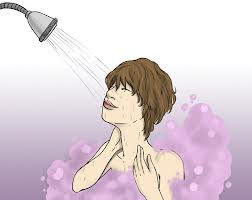
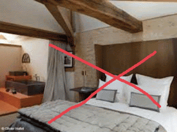
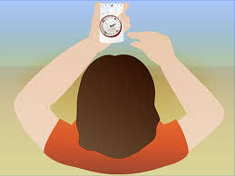
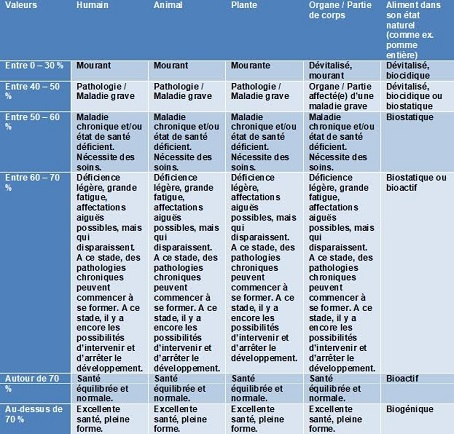

Médium
Médium signifie "milieu" ce qui veut dire que le médium fait l'intermédiaire entre les vivants et les morts. La médiumnité se manifeste par des flashs volontaires ou non, que le médium interprète plus ou moins facilement.
Parfois, il fait appel à des supports (cartes, tarots, pendule, boule de cristal…)de façon à orienter ses patients vers un sujet donné et l’aider à transmettre convenablement le message reçu.

Ce que nous pouvons effectuer avec le don de médium:
- Capter les messages d'un défunt, animal
- Communication avec un défunt, animal
- Désenvoûtement (Maison ou personne.)
- Séance de voyance Classique.
Hatha yoga

Le Hatha-Yoga est un enchaînement de postures (asanas en sanskrit) très simples ou plus compliquées.
Le Hatha-Yoga étant une discipline qui s'adresse à tout le monde, il existe différents niveaux selon que vous soyez débutant ou plus expérimenté dans la discipline.
Contrairement à un enchaînement de gymnastique, les postures doivent être maintenues suffisamment longtemps : environ 3 minutes par posture.
On y associe le contrôle du souffle (pranayama) et la concentration.
Reiki

Dans une séance de Reiki, le praticien canalise l'énergie universelle et, à l’aide de symboles ésotériques et de sons sacrés, la transmet en imposant ses mains sur différentes parties du corps du patient. Les mains n’ont pas à entrer en contact direct avec le corps du patient. La transmission d’énergie pourrait même se faire à distance. L’énergie universelle posséderait par ailleurs son « intelligence propre », ce qui lui permettrait à la fois de se diriger exactement là où le patient en a besoin, et de ne causer aucun effet secondaire indésirable. L’énergie personnelle du praticien est censée ne jamais intervenir dans le processus.
Une des caractéristiques du Reiki est que n'importe qui pourrait devenir praticien facilement et rapidement. Une ou deux fins de semaine suffiraient, et on pourrait aussitôt commencer à se traiter soi-même ou à traiter les gens de son entourage.
Le Reiki appartient aux approches dites énergétiques, dans lesquelles le praticien intervient sur le champ vibratoire de la personne. Cette habileté est habituellement associée à des techniques de méditation ou à des disciplines de pratique spirituelle comme il en a existé, sous une forme ou une autre, dans la majorité des cultures à travers l'histoire. Mais le Reiki se distingue de ces pratiques traditionnelles puisqu’il est dépouillé de toute attache religieuse et qu’il ne demande pas de cheminement spirituel particulier.
Magnétiseur

Les magnétiseurs guérisseurs sont tous différents , le don est plus ou moins développé selon les personnes. Le magnétisme transmet l'énergie, rétablit l'harmonie, l'équilibre du corps, de l'âme et de l'esprit. Certains magnétiseurs parlent beaucoup avec le consultant, d 'autres parlent très peu afin de mieux se concentrer et d'agir plus profondément.
Le magnétisme est une énergie propre à certaine personne, qui leur donne le don de guérir. Cette faculté, cette énergie n'appartient pas à tous les hommes. Ce qui signifie qu'il ne suffit pas d'apprendre à magnétiser pour être magnétiseur.Quelque soit le nom que l'on lui attribue, Guérisseur, Magnétiseur, celui-ci veut guérir.
Le magnétiseur peut travailler à distance sur photo ou en cabinet.
Ce que nous pouvons effectuer ensemble par le Magnétisme :
- Séance de magnétisme afin de soulagez vos douleurs.
- Lavage énergétique.
- Ré-équilibrage énergétique.
- Rapprochement sentimental.
- Retour affectif.
- Envoûtement d'amour.
- Désenvoûtement.
Le magnétiseur ou l'énergéticien... aide, il rééquilibre, harmonise l'énergie de tout le corps, remet les défenses immunitaires qui servent de protections en fonction dans tout le corps. Il amène l'énergie nécessaire au rééquilibrage matière, céleste, corps et aura, il sert d'amplificateur à l'activation énergétique, il est canal, éméteur, récepteur si il travail en toute conscience et connaissance de cause. Son action défait les noeuds énergétiques qui correspondent à un organe en faiblesse facteur de la douleur. En effet, la douleur est le moyen pour le corps de nous prévenir qu'il faut rectifier le tir.( Exprimer sa propre vibration)
Magnétiseurs, énergéticiens sont des émetteurs récepteurs qui peuvent aider dans cette démarche, ils ont la chance, la possibilité de savoir travailler avec les énergies qui les entourent et s'en servent pour soulager les gens, mais aussi les animaux ou les plantes... l'énergie étant universelle. (La Lumière, notre guide vers le supramental... )
Leur pouvoir est de savoir utiliser l'énergie et de travailler avec en toute conscience, en connaissance de cause. Un de leurs rôles est de faire comprendre à la personne qu'elle peut elle-même se régénérer par un travail sur soi permanent, en étant à l'écoute de son corps, en changeant aussi son comportement quotidien et son état d'esprit ( de penser) envers le monde qui l'entoure. Les êtres humains peuvent utiliser l'énergie, consciemment ou pas, peu importe, ils ont cela en eux. Ils peuvent augmenter leur taux vibratoire et se servir des énergies qu'ils reçoivent. (Notre deuxième cerveau, notre équilibre,)
Le fluide magnétique ou fluide vital est en chacun de nous. Quand il se retire de nous, nous mourons. Supposons, pour nous faire comprendre, que tout être humain (ou animal) possède normalement cent kg de fluide, dont cinquante de fluide de polarité positive et cinquante de polarité négative. Si cette répartition se déséquilibre, ou si la quantité totale tombe à 90 ou 80 kg : vous êtes malade ou anémié ; les microbes que vous absorbez chaque jour ont prise sur votre organisme, ou l'un de vos organes cesse de fonctionner normalement.
Naturellement l'organe qui est chez vous le plus faible est le premier à en pâtir ; si c'est l'intestin, le docteur Diafoirus appellera votre maladie : gastro-ceci ou gastro-cela ou entéro-autre chose ; si c'est le cerveau, il dira : céphalalgie ou méningite, etc... Aussi, le malheureux étudiant en médecine est-il obligé d'apprendre par cœur une foule de noms de maladies et les symptômes à quoi on les reconnaît. Puis, il doit connaître les médicaments qu'il peut essayer sur vous les uns après les autres (il y en a, en cette année 1975, environ 18.000) en attendant que la nature ait repris le dessus et que votre tonus magnétique soit redevenu normal.
Si, par contre, vous avez en vous plus de magnétisme que les 100 kg nécessaires, vous êtes un magnétiseur, car vous pouvez donner aux autres votre surplus de fluide, qui, d'ailleurs, déborde tout seul de votre corps.
Mais, qu'il vous manque du fluide, ou que vous en ayez seulement la quantité suffisante, vous pouvez puiser, dans l'air, et les aliments, volontairement, un surplus de fluide qui d'abord rétablira votre santé si nécessaire, et qui, ensuite, fera de vous un puissant magnétiseur. Et c'est ce que nous allons apprendre de suite. Les yogis, ces psychistes de l'Inde et du Tibet, appellent Prana, ce que nous nommons fluide, et connaissent de nombreuses façons de le capter. Nous leur en emprunterons sans vergogne quelques-unes et nous y ajouterons des connaissances plus occidentales.
Notez tout d'abord ceci : l'homme devient ce qu'il croit être. Si vous voulez devenir un magnétiseur, il faut d'abord vous persuader que vous en êtes un. Emile Coué vous aurait dit qu'il suffisait pour cela de vous répéter machinalement : « Je suis plus Magnétiseur aujourd'hui que hier et le serai plus demain qu'aujourd'hui. C'est un peu trop simpliste ! Certes ! Il faut vous persuader, en vous le répétant, que votre pouvoir magnétique augmente. Apprenez par cœur cette affirmation et répétez très souvent, avec conviction : J’accumule sans cesse en moi le fluide magnétique ; ma puissance magnétique augmente de jour en jour ; je suis un puissant magnétiseur ».
Mais cela ne suffit pas. Les grands acteurs sont ceux qui ne se contentent pas de « jouer » un personnage, mais qui s'identifient à ce personnage, deviennent réellement ce personnage non seulement sur la scène mais même dans la vie Aussi, dès à présent, vivez et pensez en grand Magnétiseur. Imaginez-vous sans cesse que les caméras sont braquées sur vous et JOUEZ votre personnage car, dès à présent, vous êtes un Magnétiseur...
Vous allez trouver ici les moyens d'augmenter votre potentiel fluidique, de plus en plus. Si vous êtes malade ou faible, votre santé va être rétablie par vous-même. Puis, par diverses expériences, vous allez vous prouver et prouver aux autres que votre pouvoir magnétique s'accroît.
Le SOLEIL est la grande source de toute vie. Chaque fois que vous le pouvez, vivez au soleil ; prenez des bains de soleil (prudemment et progressivement). Par le nez, aspirez en vous l'air ensoleillé, sciemment, en visualisant (c'est-à‑dire en voyant mentalement) la lumière dorée du soleil entrer à flots par vos narines et emplir tout votre corps comme si ce corps était un sac vide ; votre vue et rendre vos yeux plus brillants et plus magnétiques. (N'oubliez pas que vous projetez le fluide par vos yeux et vos mains). Avant de magnétiser, accumulez le fluide dans vos mains. Exercez-vous en toutes occasions.
L'EAU n'est pas une boisson insipide. Si l'air est rempli de fluide positif (+), l'eau contient du fluide négatif (—). Le matin au lever, le soir avant de vous coucher, absorbez un grand verre d'eau fraîche en concentrant votre pensée sur le fait que vous captez ce fluide et le fixez en vous. Vos nourritures « saines » (légumes, fruits, cresson, pissenlits) sont pleins de fluide négatif ; mangez lentement, en silence, en mâchant bien et en absorbant volontairement tout ce fluide.
LES ARBRES sont pleins de fluides. Promenez-vous chaque fois que vous le pouvez dans les bois en aspirant à pleins poumons. Adossez-vous à un arbre et aspirez sa force par votre dos (si vous avez des vêtements en soie ou en nylon, c'est inutile, car ils ne laissent pas passer le fluide !). Vous pouvez aussi poser votre main sur le tronc de l'arbre et aspirer sa force, par votre main gauche si vous êtes droitier, par votre main droite si vous êtes gaucher.
La préparation
GARDEZ VOTRE FLUIDE ET SACHEZ VOUS RECHARGER. Vous savez maintenant comment charger vos accus magnétiques et devenir un puissant accumulateur de fluide. Mais ne déchargez pas vos « accus » en gesticulant sans motif, en tambourinant sur la table ou en bavardant sans arrêt comme des gens qui sont atteint d'incontinence verbale. Un penseur, dont je suis désolé d'avoir oublié le nom, a dit : « Le silence est père de l'observation, il rend impénétrable mais pénétrant ; il écarte la familiarité qui engendre le mépris ». Ecrivez cette phrase en lettres d'or sur le mur de votre chambre !
Mais après une journée de fatigue, nos accus sont vidés et nous nous endormons ; mal, très mal, non détendus, nous gesticulons en dormant. Les yogis, eux se reposent en pratiquant le « SAVASANA », c'est-à-dire : la position de la mort. Si vous vous endormez le soir en pratiquant cet exercice, deux heures de sommeil vous reposeront (vous rechargeront en fluide vital) autant qu'une nuit entière de sommeil normal. Vous pouvez pratiquement pratiquer partout cet exercice connu chez nous sous les noms de « sommeil conscient » ou de « relaxation totale ». Voici comment on le pratique :
Installez-vous confortablement dans un bon fauteuil, ou sur une chaise-longue ou sur un matelas assez rigide, ou sur le gazon, ou sur une couverture pliée sur le sol. Il faut avant tout relaxer tous vos muscles jusqu'à ce que votre corps entier soit aussi flasque qu'un drap mouillé. Vous y arriverez facilement en décontractant vos doigts, vos orteils et vos paupières ; les muscles intermédiaires se relâcheront alors facilement. Tant que vous ne réaliserez pas très bien ce premier stade, il sera inutile d'aller plus loin.
Quand vous serez bien relaxé, portez votre attention sur votre respiration ; elle devra devenir celle d'un dormeur : lente, profonde, régulière.
La méthode
Enfin, voici la chose difficile à faire ! Au début elle vous sera impossible, mais avec l'entraînement on y parvient progressivement : il faut relaxer votre cerveau, CESSER DE PENSER. Pour cela : fermez vos paupières et regardez LE NOIR comme si vous vous attendiez à voir quelque chose. Restez dans l'expectative, attendant de VOIR et d'ENTENDRE... Des pensées viendront occuper votre esprit et vous vous apercevrez que vous vous êtes remis à penser. Sans vous énerver, remettez-vous dans l'état d'expectative... et un super-sommeil viendra qui réparera à merveille votre énergie nerveuse.
Ouvrons ici une parenthèse pour vous prévenir de ce qui peut vous arriver et pour que vous n'en soyez pas effrayé. Cet exercice est le plus important du yoga de Patanjali. Si vous le pratiquez chaque jour pendant une heure, tôt ou tard suivant que vous êtes plus ou moins prédisposé, vous vous trouverez soudain HORS DE VOTRE CORPS PHYSIQUE que vous verrez de l'extérieur. Un simple désir de votre part vous transportera là où vous voulez aller, INSTANTANEMENT et vous saurez alors ceci : LA MORT N'EXISTE PAS.
Voici quelques petits exercices pour tester son magnétisme :
Pour ceux et celles qui ne connaissent pas le magnétisme, mais voudraient expérimenter son existence, voire débuter dans son exercice, je vous propose ce premier exercice (d'autres suivront ultérieurement) :
Exercice simple de magnétisation de l’eau :
Prenez deux verres transparents et semblables, que vous remplissez d’eau. Il vaut mieux prendre une eau minérale (pas trop minéralisée), ainsi le goût est plus facile à déterminer. Un des deux verres ne sera pas touché, et servira de témoin.
Magnétisez durant 3 minutes environ le verre que vous avez choisi comme objet d’étude, en plaçant vos main juste au-dessus de celui-ci, doigts en pointe. Imaginez en même temps, qu’une énergie sort de vos doigts et pénètre dans l’eau magnétisée.
Ensuite vaquez à vos occupations quotidiennes, en laissant les deux verres à l’abri de la poussière, et sans y toucher d’une quelconque façon.
Il faut effectuer cet exercice durant 3 jours au minimum (le mieux est une semaine). Lorsque cela est fait, il vous faut goûter l’eau des deux verres et noter vos conclusions. L’eau magnétisée doit avoir un goût différent, un peu ferreux.
Si l’exercice n’a pas réussi, recommencez l’expérience depuis le début, un peu plus longtemps que précédemment.
Note : si vous vous sentez plus à l'aise mains étendue au-dessus de l'eau, faites-le. Testez les deux possibilités. Vous verrez laquelle vous convient le mieux.
Élément Eau : Magnétisation de l’eau :
Prenez deux verres transparents et identiques (pour que la couleur et les ondes de forme ne jouent pas) et remplissez-les d’eau, peu importe la provenance, mais il est préférable que l’eau d’origine ait peu de goût pour sentir la différence à l’arrivée.
Prenez éventuellement un troisième verre identique et rempli de la même eau que vous placez sous une pyramide - qui peut être en carton, l’important est que ses proportions soient correctes.
Magnétisez pendant cinq minutes le verre choisi en plaçant vos mains à une dizaine de centimètres au dessus et en visualisant comme un fluide ou une fumée blanche qui sort de vos mains et entre dans l’eau.
Au bout de trois jours, vous devriez constater une différence de goût significative, votre verre magnétisé et celui de la pyramide ayant un arrière-goût ferreux que n’a pas le verre témoin.
Si vous craignez l’auto-persuasion, faites goûter l’eau à quelqu’un d’autre.
Élément Terre : Germination de graines :
Prenez deux assiettes et déposez-y la même quantité de graines (peu importe lesquelles, du moment qu’elles ne sont pas stérilisées ou OGM), placez les sur un coton humide que vous réhumidifierez tous les trois jours, ou des boutures de plantes à croissance rapide comme le lierre que vous placerez alors dans un récipient contenant de l’eau.
Ce test ne convient pas à la pyramide qui ne favorise pas la germination mais la conservation.
Chaque jour passez une dizaine de minutes à magnétiser votre assiette test, en plaçant vos mains à une dizaine de centimètres au dessus et en visualisant comme un fluide ou une fumée blanche qui sort de vos mains et entre dans les graines ou les boutures, leur apportant l’énergie dont elles ont besoin.
Il faut entre trois et sept jours pour voir apparaître un résultat visible et là pas d’auto-persuasion possible. Normalement les graines que vous avez magnétisées ont eu une croissance supérieure aux graines test.
Ce procédé peut être utilisé pour "booster" ou soigner vos plantes vertes.
C’est ce type de magnétisme que l’on appelle "avoir la main verte" chez les jardiniers et les amateurs de plantes et fleurs.
Elément Feu : Momification d’éléments d’origine animale :
L’exercice est décrit tantôt avec de la viande, tantôt avec des oeufs. L’odeur de l’oeuf pourri n’est pas terrible, mais il est difficile de gâcher de la viande pour une expérience, donc à vous de juger. Le test mériterait d’être tenté avec du fromage et/ou du lait, cela n’a pas encore été fait.
Il vous faut soit deux morceaux de viande, soit deux oeufs, que vous disposez dans une assiette à l’air libre.
Si vous optez pour les oeufs, faites en sorte qu’ils arrivent à la date de péremption, histoire que l’exercice ne nécessite pas des jours et des jours.
Placez chaque élément dans une assiette à l’air libre, hors de portée de vos animaux si vous en avez.
Chaque jour, pendant un quart d’heure environ, magnétisez une des deux assiettes (l’autre sert de témoin).
Pour magnétiser, placez vos mains à une dizaine de centimètres au dessus de l’assiette et visualisez comme un fluide ou une fumée blanche sortant de vos mains.
Vous pouvez aussi avoir un troisième témoin où votre morceau de viande/oeuf est placé sous une pyramide, comme précédemment.
Si la pyramide est correcte dans ses proportions, vous devez obtenir le même résultat qu’avec le magnétisme.
Si tout se passe correctement, ce que vous avez magnétisé ou mis sous la pyramide se momifie, à la différence de l’assiette témoin dans laquelle il y a putréfaction.
Notez que ce dernier exercice n’a pas tenté grand monde... et que ce n’est pas parce que vous le ratez ou ne l’effectuez pas que vous n’avez pas de magnétisme.
REMARQUE :
Personnellement j'utilise des fruits, petits de préfèrence, moi en général c'est une clémentine Very Happy , à ce moment là il suffit de prendre 2 fruits (les mêmes bien entendu), un témoin et un test, le fruit témoin est à gardé dans un coin sec jusqu'à la fin de l'exercice pour comparaison.
Prenez le fruit à magnitiser dans votre main en la gardant bien fermé et pensez au magnétisme qui se dégage de vous pour aller dans le fruit.
Pratiquez cet exercice 15 minutes par jour pendant plusieurs jours jusqu'au résultat.
Le fruit que vous avez magnitisé devrait avoir rétrécie et être devenu très dur et sec (un peu comme une balle de golf pour une clémentine) au bout de quelques jours tandis que le fruit témoin sera pourri ou commencera à pourrir.
Les conclusions que l’on peut en tirer :
Tout le monde a du magnétisme, plus ou moins développé. Si l’expérience a échoué, ne vous découragez pas et recommencez, cela vous permettra d’améliorer vos énergies également. Cela peut être du à la fatigue ou à une énergie qui a besoin d’être "vitaminée" chez vous.
Bien que l’expérience montre que le magnétisme n’ait pas d’application spécifique selon un élément, simplement que certains ont un don très spécialisé, comme les brûlures, on peut déterminer une orientation générale des résultats :
Si vous avez réussi la magnétisation de l’eau => Votre action magnétique sera efficace sur les maladies d’origine circulatoire, sur les troubles urinaires, sur les infections et rétention d’eau.
Si vous avez réussi la magnétisation des graines =>Votre action magnétique sera davantage efficace sur les troubles fonctionnels : digestifs, hépatiques, sur les angoisses, sur l’anxiété, la nervosité et la fatigue.
Si vous avez réussi la momification de la viande ou de l’oeuf => Votre action magnétique sera efficace sur les maladies de la peau, sur les brûlures, sur les douleurs dues aux coups, sur les rhumatismes, sur l’arthrose etc.
Si tous les exercices ont été réussi => Votre composante magnétique est totale et déjà développée. Poursuivez vos efforts
Eau de source avec ajout de pierres dans un but thérapeutique- Ayurveya

Opale laiteuse – Améthyste - Lapis lazuli – Grenat - Cornaline – Calcite orange - Cristal de roche Cette fiole a spécialement eté crée pour célébrer les dix ans de VitaJuwel. Elle est proposée en Edition limitée. Le mot Ayurveda signifie "science de la vie". C’est le système holistique traditionnel de la médecine en Inde.
Tout ce dont vous avez besoin, c’est ... de l'eau. Et quand vous y ajoutez du quartz rose, la pierre par excellence de l'amour, de la tendresse et de la sensualité, tout devient possible. Le quartz rose, beau et charmant, est un talisman pour les relations.
Jade (Néphrite) - Cornaline - Calcite orange - Cristal de roche Les praticiens en médecine alternative recommandent ce mélange pour renforcer votre flux vital. Redécouvrez votre paix intérieure et votre harmonie.
Communication intuitive - télépathie
Comprendre ce que les animaux ressentent afin de mieux les respecter, c'est possible et ça se travaille. Si cette méthode, la communication intuitive, n’est pas scientifiquement homologuée, les résultats sont pourtant éloquents. Et c'est extraordinaire.
C’est quoi ? La communication intuitive, c'est son nom (ou communication animale) est une méthode pour communiquer avec les animaux par la télépathie. Elle peut se pratiquer par un échange d’images, de pensées, d’émotions ou d’intuitions, l’homme et l’animal ayant la même gamme de ressentis physiques et émotionnels, et l’animal étant télépathe, selon les pratiquants et les observateurs. Ce que de plus en plus de scientifiques admettent, sans pouvoir toujours l’expliquer.
« En 2002, la diffusion d’un documentaire sur Marta Williams a été un choc. Cette femme avait la capacité de communiquer avec les animaux. Sa maison était un éden où cohabitaient paisiblement toutes sortes d’espèces. Mais cette aptitude avait une terrible contrepartie : quand elle ne pouvait pas protéger un animal qui lui envoyait un message de souffrance, cela la dévastait. C’est ce qui m’a tenue à distance de cet apprentissage. Mais dix ans plus tard, après la mort de mon chat adoré, j’ai passé un cap et me suis inscrite à un stage d’une journée via internet. Malgré le peu de crédit que la science lui accorde faute de pouvoir la rationnaliser, la communication intuitive fait de plus en plus d’adeptes qui la pratiquent à travers le monde. C’est pourquoi il n’est pas difficile de trouver des formateurs rigoureux quand, enfin, le cœur nous en dit.
Le jour du stage arrive. Nous sommes une dizaine. La formatrice (interprète animalier), Fabienne Maillefer est pragmatique, terrienne, généreuse. On commence tous par se présenter : « Je m’appelle… j’habite à…, j’ai tel animal et il s’appelle... je fais tel job ». Rien de plus. On ne se raconte pas. On ne raconte pas notre animal non plus. C’est le principe : la communication sera intuitive, on limite les interférences. Le temps d’un café, Fabienne nous enseigne la déontologie de la discipline, indispensable si on la met au service d’un autre animal que le nôtre et de son propriétaire. Première règle : tous deux (homme et animal) doivent accepter cette communication. On ne fait pas intrusion à leur corps défendant. Deuxième règle : après avoir posé une question précise et simple à l’animal et pour s’assurer que nous avons capté sa réponse sans l’interpréter, la déformer ou délirer, on fait valider formellement les informations qu’il nous donne par son maître (par exemple : l’animal nous dit qu’il souffre de solitude ; on peut demander à son maître s’il rentre tard chez lui, si l'animal vit dehors, quels sont les interdits qui lui sont imposés, etc. ou bien l’animal se plaint d’une douleur au dos : a-t-il fait une chute ? A-t-il été blessé dans son existence ?). Puis Fabienne nous invite à une séance de méditation guidée afin de faire le vide et de s’ouvrir à nos sensations, nos visions, aux sons qui surgissent, sans les passer au crible de notre logique ou de nos a priori.
Nous passons au premier exercice : visiter l’appartement de notre voisine grâce aux images qu’elle nous envoie par télépathie. Je ne vois vraiment pas comment y arriver, je me déconcentre… Et bien sûr, je ne vois rien, excepté ce que j’imagine. C’est-à-dire mes propres images. Râté. Sauf à la fin, une cuisine jaune. Je tombe juste, sûrement le hasard.
L’après midi, le programme est autrement plus excitant pour les fous d'animaux que nous sommes tous : nous allons communiquer avec l'un d'entre eux d’après sa photo. Il s'agit d'une poule de treize ans, Charlotte, qui appartient à Fabienne. Nous partons à sa rencontre pendant la deuxième séance de méditation guidée. Je la vois s’avancer en relevant continuellement sa patte droite. Je me présente mentalement à elle et lui demande si elle est d’accord pour me montrer l’endroit où elle vit. Je vois un grand terrain, une cabane en bois, un endroit très ombragé… Un chien au pelage clair couché sur le ventre qui veut attirer son attention… Je note mes « visions » sur mon carnet. Puis Fabienne nous les demande à tour de rôle. Enfin, photo à l’appui, elle nous décrit la réalité : sous un érable gigantesque (qui fait beaucoup d’ombre) il y a une niche (la maison de la poule) adossée à une cabane en bois. La chienne de la maison, au pelage crème, passe son temps à vouloir jouer avec elle… Charlotte souffre d’arthrose à la patte droite. Ses maîtres s’en sont aperçus parce qu’elle levait tout le temps sa patte… Incroyable Charlotte ! Près d'un an plus tard, j'ai pensé intensément à elle, ma première guide, durant plusieurs jours. J'ai su par Fabienne qu'à la même période, Charlotte vivait ses dernières heures et s'est rappelée au vibrant souvenir de tous ceux qui avaient communiqué avec elle... Nous pouvons apprendre à communiquer avec toutes les espèces. Oui, même les araignées ! Parfois, le message ne passe passe pas : la fatigue, les préoccupations, trop d'empressement, même, font barrage. On ne débarque pas dans ce monde avec armes et bagages. En cela aussi c'est une précieuse école. Je continue chaque jour à l’expérimenter. Et c’est mieux que d’aller sur Mars. »
En pratique, où s’inscrire ? De nombreux communicateurs professionnels (ou interpètes animaliers) ont un site très complets sur internet où figurent leur biographie, leur cursus, leur charte éthique, les programmes des cours, stages et formations. On peut les contacter pour une communication intuitive avec notre animal vivant ou décédé. Certains communicateurs sont spécialisés dans la communication avec les animaux défunts. La plupart des communicateurs proposent une bibliographie des ouvrages références et peuvent vous conseiller un confrère dans votre région. Lectures conseillées : "La communication animale, une rencontre d'âme à âme", de Fabienne Maillefer, éditions BoD ; « Communiquer avec les animaux » de Laïla Del Monte (Editions Véga) ; « La communication animale », d’Erik Pigani, (Editions JC Lattès) ; “L'effet Mowgli ou comment dialoguer avec les animaux”, de Jean-Luc Janiszewski, (Editions Le temps présent) ; La connexion perdue de Marta Williams (Editions Jouvence)
Can Cats and Dogs See "Spirits"? Science Confirms They Can See Frequencies We Can't
It was recently brought to my attention that even mainstream science recognizes cats, dogs, and other animals can see frequencies humans can’t.
After reading about it a little bit, it makes sense scientifically in a separate way from spiritually. It’s simple really: the scientific explanation is that cats and dogs can see UV light and a few other rays, which human retinas don’t have the ability to see.
It was previously believed that all mammals had similar eyes to humans, incapable of seeing UV rays, but scientific evidence suggests many mammals can.
A study conducted a few years ago by biologists at City University London, UK provided evidence for this differential in sight between species.
According to Pet MD:
“Have you ever felt that your cat or dog can see something you don’t? Well, you may be right, according to a new study. Cats, dogs, and other mammals are thought to see in ultraviolet light, which opens up a whole different world than the one we see, the study explains. UV light is the wave length beyond the visible light from red to violet that humans can see. Humans have a lens that blocks UV from reaching the retina. It was previously thought that most mammals have lenses similar to humans. Scientists studied the lenses of dead mammals, including cats, dogs, monkeys, pandas, hedgehogs, and ferrets. By researching how much light passes through the lens to reach the retina, they concluded that some mammals previously thought not to be able to see UV actually can.”
However, I believe there is something more to this phenomena that delves into the metaphysical realm.
My little sister and I have had experiences where our cats see things that aren’t there. They bat at the air with their paws, meow, hiss, and make strange noises at things that we can’t see.
The most profound time it occurred was right after my grandfather passed. Our cat named Double Stuff was batting at the air, meowing very strangely, and chasing something around the room, trying to jump at it in the air, looking at this thing on the ceiling.
It was almost as if some spirit or entity was floating around on the ceiling and only the cat could see it.
There was no different UV light in my room when the cat did this: so why would the cat only at that time try to chase some invisible things?
Then a few weeks ago, my sister experienced seeing “shadow people,” a phenomena commonly reported by people who suffer from sleep paralysis.
As she saw these shadow entities around the house at night (given that it wasn’t an illusion), the cat started acting strange and scared. It meowed, hissed, did the same things it did before but in a scared way, not bewildered and interested.
Do you feel like some other entities exist around us, just as ultraviolet rays exist around us that we can’t perceive, and only certain animals are, perhaps even only sometimes, aware of them? I certainly do from my experience.
En résumé pour ceux ne comprenant pas l’anglais, nos chiens et chats perçoivent les esprits , entités…..
Communication intuitive animale

La communication intuitive, ou communication animale par la télépathie, est décrite par ses pratiquants comme une forme de communication de type télépathique, intra-espèces et inter-espèces, en particulier entre l'humain et les animaux. Elle est parfois étendue à une communication avec le règne végétal et le minéral. Quelques études para et pseudo-scientifiques évoquent la possibilité d'une communication télépathique entre les animaux, notamment chez les lapins, les chiens et les perroquets. La communication intuitive rejoint parfois le concept parapsychologique de « résonance morphique » créé par l'auteur britannique Rupert Sheldrake.
Popularisée en Californie à la fin du xxe siècle par Pénélope Smith, la communication intuitive fait l'objet d'un engouement aux États-Unis et en Europe, notamment à travers des émissions de télévision et l'organisation de stages, dont la finalité est d'apprendre à communiquer par télépathie avec les animaux. Ces stages organisés en majorité par des femmes connaissent un grand succès et attirent surtout un public féminin. Les pratiquantes, comme Laila del Monte, travaillent tout particulièrement avec des chevaux et des chiens. La communication intuitive implique un « contact télépathique » avec un animal, qui peut se traduire par des visions, la perception de sons ou de sensations diverses chez l'être humain. Selon les témoignages, la perception du monde et des animaux après une expérience de communication intuitive peut être considérablement modifiée. Les pratiquants peuvent s'orienter vers différentes spécialités, telles que le soin aux animaux, l'aide psychologique, la recherche des animaux disparus ou le deuil de l'animal de compagnie. La communication intuitive est souvent proche dans son concept et ses idées d'un néo-chamanisme écologique et du New Age, faisant intervenir l'animal-totem, ou encore le reiki.
Faire le deuil de son animal de compagnie
Ce sont des compagnons, des maîtres de vie. Nous les aimons comme des amis, voire comme des frères, ou parfois même des enfants. Les animaux de compagnie occupent souvent autant de place que les êtres humains dans la vie de leurs maîtres. Lorsqu’ils décèdent, leur absence peut créer un vide aussi douloureux que la perte d’un proche. Et un vrai travail de deuil est nécessaire, d’autant plus difficile qu’il est souvent incompris et sous-estimé.
« Elle a réuni ses dernières forces pour venir s'éteindre dans mes bras. Je l'ai cajolée et lui ai parlé jusqu'au dernier moment. J'ai essayé de la réchauffer, mais je sentais bien son petit corps se refroidir et la vie la quitter. Elle est morte à 22h22, et aujourd’hui encore, à chaque fois que cette heure s'affiche, je pense à elle et j'ai envie de pleurer », raconte Florence, qui a perdu sa chatte Marie en 2006. Huit ans après, la douleur causée par cette perte est encore bien présente. Une peine que connaissent de nombreux propriétaires pour qui leur animal de compagnie est bien plus qu’une bête à poils, à plumes ou à écailles.
Perdre un vrai compagnon de vie
« Quel que soit l'animal que vous possédez, il ne vous juge pas, n'est pas jaloux, ne vous trompe pas, et vous aime tel que vous êtes. Et cela, jamais un humain ne le fera », commente Nadine, dont la chatte Isis est décédée à l’âge de 12 ans. Pour Camille, son cheval – même s’il ne vivait pas avec elle -, était un réel compagnon de vie. « Rock était un prolongement de moi. Avec lui, je ressentais un bien-être incroyable et un élan de liberté. C’était aussi un vrai maître de vie ».
De son côté, Amélie a eu l’impression de trouver son âme sœur en sa chienne Lilou. « Dès que nous nous sommes vues, ça a été le coup de foudre. Nous ne faisions qu'une. Nous étions comme connectées ». Pour d’autres, comme Pauline, l’animal devient un membre de la famille. « Notre chien Charlie était comme un enfant pour mon compagnon et moi. J’avais l’impression d’être en symbiose avec lui ». Même ressenti chez Norbertus. « Nos deux enfants considéraient notre chienne presque comme une grande sœur ».
C’est parce qu’un animal de compagnie a tant d’importance dans la vie de son maître que son décès crée un vide immense et que le deuil est aussi douloureux. Selon Valérie, 48 ans, si le chagrin causé par la perte de son chien a été aussi forte, c’est parce qu’elle l’a forcée à voir les choses en face. « Sa disparition a réveillé mon mal existentiel : nous ne sommes pas éternels, mais bien mortels ».
Affronter l’incompréhension des autres
« Ce n’est qu’un animal, il n’y a pas mort d’homme », « Ne te mets pas dans des états pareils pour un chat », « Tu n’as qu’à en reprendre un autre »… Des remarques fréquentes qui font du mal et mettent parfois en colère. Ce regard sévère, Valérie a dû y faire face lorsqu’elle a perdu son chien de quinze ans. « Comment oser dire que ce décès est à relativiser ? Cette disparition a été plus importante que celle de mes grands-parents. Mon chien vivait avec moi 24/24h, il était mon éponge à émotions, mon repère au quotidien ».
C’est justement ce rapprochement avec la perte d’un proche qui est souvent critiqué par ceux qui ne saisissent pas ce qu’implique la mort d’un animal de compagnie. « Il est souvent très difficile de faire part de son désarroi. Les personnes qui n'ont jamais vécu de relation intense avec un animal ne peuvent pas comprendre le bouleversement et la souffrance ressentis », analyse la vétérinaire Marina von Allmen. Pourtant, il est important de considérer à sa juste valeur la douleur causée par cette perte. « Pour certains la mort d’un animal de compagnie sera effectivement plus douloureuse que le décès d’un parent. Cette peine est propre à chacun et dépend de son histoire de vie. On ne peut pas comparer et hiérarchiser les souffrances des autres », ajoute la thérapeute du deuil Martine Golay Ramel.
Lorsque son lapin Nuage est décédé, Alexia a été anéantie. Les moqueries de ses camarades de lycée ont aggravé son sentiment de solitude. « Mes amies se moquaient de moi. Une d’entre elles a même osé me mettre ses gants en angora sous le nez parce qu'elle trouvait ça drôle. » Une attitude cruelle qui illustre bien l’incompréhension de certains face à la mort d’un animal. Pour Camille, le pire était la question systématique : « Et ça vit combien de temps un cheval ? » Comme si sa durée de vie le définissait. « Les gens ne comprennent pas que lorsqu’il est décédé, c’était comme si on m’avait coupé les jambes ». Une image forte, reflet là encore de l’importance qu’un animal peut avoir dans la vie de son propriétaire. Et ce, quel qu’il soit : un passionné d’oiseaux, un cavalier qui perd son cheval ou encore un propriétaire dont le chat décède. « Le degré de souffrance ne dépend pas de la race ou la grosseur de l’animal, ni même de sa durée de vie,confirme la thérapeute Martine Golay Ramel. Certes, le lien s’approfondit dans le temps, mais la perte, elle, est liée à l’expérience personnelle. »
S’il est difficile de parler de cette peine autour de soi, c’est pourtant essentiel, selon Marina von Allmen. « Se taire ne fait qu'aggraver et intensifier son désespoir, compliquer et prolonger le processus de deuil. Des émotions enfouies et tues s'impriment au plus profond de notre être pour refaire surface régulièrement. » Et si son entourage ne comprend pas cette douleur, ou qu’il ne sait pas comment aider, mieux vaut se tourner vers le vétérinaire, un groupe de parole, un professionnel de l’accompagnement du deuil ou même un psychologue, pour ne pas avoir à surmonter seul cette épreuve
Saviez-vous que les chats ont une mission dans notre vie ?
La plupart des gens pensent que les chats ne font rien, sont paresseux et qu’ils ne font que manger et dormir.
La vérité est toute autre !
Vous êtes vous déjà demandé pourquoi tant de gens ont des chats de nos jours, bien plus que le nombre de personnes ayant des chiens ?
Voici quelques données que vous devez connaître sur la vie secrète des chats.
Tous les chats ont le pouvoir de supprimer les énergies négatives accumulées dans notre corps.
Quand nous dormons, ils absorbent ces énergies .
S’il y a plusieurs personnes dans une famille, et seulement un chat, il peut absorber à lui seul la quantité excessive d’énergie négative produite par plusieurs personnes.
Quand ils dorment, le corps des chats se libère de la négativité qu’il a éliminée en nous et qu’il a pris sur lui… c’est en grande partie pour cette raison qu’ils dorment beaucoup, ils se purgent…
C’est bien d’avoir plus d’un chat à la maison afin que la charge soit répartie entre eux.
Ils nous protègent également pendant la nuit afin qu’aucun esprit indésirable ne vienne parasiter notre maison pendant que nous dormons.
C’est une des raisons pour laquelle ils viennent dormir à nos côtés sur notre lit . Si quelqu’un vient à la maison et que les chats sentent que cette personne est malveillante, les chats nous entourent afin de nous mettre en garde et nous protéger.
Si un chat errant entre dans votre maison et qu’il l’adopte comme étant sa maison, c’est parce que vous avez besoin d’un chat à ce moment particulier de votre vie. Les chats errants se portent volontaires pour vous venir en aide. Ils ont quelque chose à vous apporter…Il n’y a pas de hasard…
Les chats sont des guérisseurs…
À l’époque de l’Atlantide, les guérisseurs utilisaient des cristaux dans leur travail.
Les cristaux étaient utilisés comme canaux d’énergie pour la guérison.
Ce que font un peu les chats à leur façon…
Les chats sont d’adorables créatures et aiment leurs maîtres par-dessus tout, même s’ils ont une façon différente d’aimer …mais qui est toute aussi profonde et vraie.
Ils sont des grands amis et des bons compagnons de vie !
Ils sont doux, affectueux et fidèles pour peu qu’on les respecte !
Qu’est-ce que la « Pleine Conscience » ou « Mindfulness »?
Il n’y a pas de mindfulness sans heartfulness (Jon Kabat-Zinn)
Gérer… stress, anxiété, ruminations mentales, troubles du sommeil, colère, détresse face à la maladie, pensées dépressives, … et
Développer... une plus grande sérénité, savourer l’instant présent, améliorer son bien-être, mieux se connaître et découvrir les autres, se (re)connecter à ses valeurs, prendre davantage soin de soi.
La pleine conscience:

une intention, une pratique
La Pleine Conscience (ou « mindfulness« ), pratique ancestrale, constitue moins une technique qu’une façon d’être. Cette pratique de la méditation est définie comme le fait de « porter son attention sur le moment présent, instant après instant, de façon intentionnelle, et sans jugement de valeur » (Kabat-Zinn, 1993). Cette compétence profondément universelle est généralement peu exercée. Nous sommes en effet souvent à mille lieux de l’ici et maintenant, en pilotage automatique, pris dans des ruminations sur le passé, des projets sur l’avenir, des jugements sur le présent. Le rythme de la vie d’aujourd’hui nous amène également à tenter de faire face à de multiples demandes, en même temps, nous éloignant ainsi de notre capacité à répondre avec calme et ouverture. Ces comportements, souvent source de stress, peuvent entraîner de la souffrance: tensions (physiques et/ou psychologiques), irritabilité, humeur morose, tensions relationnelles, impulsivité, difficulté à se concentrer, troubles du sommeil, fatigue voire épuisement, …
Digipuncture

L'acupuncture chinoise traditionnelle est une technique très complexe, réservée aux médecins. Il existe une méthode plus simple qui demande moins d'expérience et qui ne nécessite aucune préparation médicale spécifique: il s'agit de la digitopuncture, également appelée acupression ou acupressure.
La digitopuncture est l'association de massages et d'acupuncture. C'est une méthode thérapeutique naturelle, utilisée depuis des millénaires en Chine et au Japon, qui agit sur les zones réflexes du coprs et permet de soigner seul ses maux quotidiens (migraine, problème de dos, insomnie, allergie, constipations...).
Le thérapeute agit par pressions sur les parties sensibles du corps afin de stimuler les circuits d'énergie. C'est une méthode qui peut soulager, au même titre que les massages, certaines zones douloureuses de l'organisme.
Si l'acupuncture se pratique à l'aide d'aiguilles, la digitoponcture utilise l'extrémité des doigts pour exercer un massage ferme sur des points de repère identiques à ceux utilisés en acupuncture
Sophro relaxation et hypno relaxation

Méthodes de relaxation physique, mentale aidant au bien être quotidien.
Les exercices se réalisent en pleine conscience.
L'entraînement en sophro relaxation a pour but d’atteindre l’harmonie physique mentale et émotionnelle.
Le but est que le patient puisse par la suite se prendre en main seul en utilisant les techniques apprises avec son praticien.
la Concentration sur la respiration est essentielle.
Sophro. Et hypno relaxation se réalisent en état de conscience modifié similaire à l’état" je suis dans la lune "
Il y a jamais d’emprise du praticien sur le patient qui reste tjs Maître De sa personne
Sophro Et hypno relaxation peuvent être complémentaires
La sophro est un outil permettant de mieux gérer sa vie au quotidien...
Le sujet pourra, à la carte, selon besoin utiliser les techniques de sophro au futur ..
La sophro est un outil pour un travail de surface .
Quant à l’hypno relaxation : travail de profondeur, terrassement dirons-nous, elle est utilisée pour dénouer des traumas.
Malgré l’intervention de thérapeute psy ...parfois le patient ne semble pas s'en sortir .CAr les traumas laissent des empreintes dans notre disque dur nommé le Cerveau archaïque que seul l’hypnose peut gommer ....
L’hypno relaxation thérapeutique est une collaboration ,technique de désensibilisation, utilisée par le praticien sur son patient afin de le désensibiliser des empreintes laissées par un choc émotionnel violent ou trauma en lui évitant le ressenti de ces moments douloureux au futur.
Aucun endormissement ou domination n'est obtenu.
Le patient est aidé à reprendre contrôle de ses émotions afin que souffrance, douleur s’effacent ...
Toutes deux sont des techniques de guérison utilisées en état de conscience modifiée
L’hypno relaxation soulage :
- Petits et grands traumas et/ou chocs: accident, agression, deuil, etc.
- Souffrances psychiques : anxiété, stress, perte d’intérêt, manque de confiance en soi, cauchemars, etc.
- Maladies psychosomatiques: maux de tête, maux de ventre, douleurs dans le dos ou les épaules, douleurs inexpliquées, problèmes de peau, douleurs chroniques, fibromyalgie, etc. (bien entendu toujours en collaboration avec les traitements proposés par le médecin traitant)
- Augmentation des capacités sportives, artistiques ou autres
- Phobies
- Préparation à la naissance ou aux opérations
- Troubles du sommeil
- Perte de poids
- Arrêt du tabac
En hypno relaxation il y a induction au patient
Y a-t-il des secrets "fermés à clé" enfouis au plus profond de vous ? Des histoires de votre vie qui vous font mal juste à y penser ? Ça ne donne pas envie d'en parler. C'est certain. L'hypno relaxation holistique vous permet de soulager ces douleurs intérieures, sans avoir à raconter les histoires qui leurs sont associées. Comment ? En état de relaxation, vous pouvez voir, sentir, percevoir votre monde intérieur, vos émotions, vos perceptions. Surtout, vous pouvez le transformer, l'embellir, lui donner de la force. Vous avez le contrôle parfait sur votre monde intérieur, il s'agit de savoir comment l'activer. Par exemple... Est-ce que le décès ou le départ d'un ami vous rend triste? En fermant les yeux, vous pouvez l'imaginer tel que vous l'avez connu. En état d'hypnose, vous pouvez l'imaginer de façon beaucoup plus vive, plus vivante. Vous êtes aussi en contact intime avec les émotions liées à cet ami. Dans cet état, vous avez le pouvoir de libérer toute la peine, la colère, la tristesse liées à son départ et à votre relation avec lui. Vous pouvez ainsi lui dire "au revoir" et le laisser partir en paix. Vous libérez ainsi les émotions qui vous alourdissent, sans avoir à parler des évènements difficiles de votre vie. Ça fait le plus grand bien !
HYPNO therapie OU SOPHRO thérapie : LAQUELLE CHOISIR ?
Bien qu’elles utilisent des approches différentes, on peut globalement souligner que l’hypno et sophro thérapies ont toute deux pour but d’apporter un mieux-être ciblé ou général ; la première en trouvant l’origine du problème, la seconde en soignant directement les maux.
En effet, l’une des principales différences entre hypnose et sophrologie se retrouve dans leur mode d’utilisation :
- QUAND UTILISER L’HYPno thérapie
- En cas de troubles liés à un événement passé (insomnie, troubles alimentaires, addiction…).
- En cas de traumatisme de jeunesse.
- QUAND UTILISER LA SOPHRO thérapie
- En cas de stress quotidien et de crises d’angoisse.
- En cas de maladie comme l’hypertension, l’asthme, le diabète, etc.
- En cas de maladies dégénératives (Parkinson, scléroses en plaques…).
Le feng shui

est un art millénaire d'origine chinoise qui a pour but d'harmoniser l'énergie environnementale d'un lieu de manière à favoriser la santé, le bien-être et la prospérité de ses occupants.
Comment activer la zone argent dans la maison ?
La zone argent se situe dans le coin gauche du mur du fond de la maison.
Vous allez activer votre zone argent en y plaçant ce qui pour vous représente la richesse, l'abondance, tout objet qui a de la valeur et en travaillant avec les coloris rouge-bordeau-doré qui symbolisent la richesse sans oublier la couleur verte associée au bois.

Quelques pistes ? Tout objet en bois ou de coloris vert, une tirelire repeinte en doré, des pièces de monnaie, un bouddha de la richesse, des petites pépites dorées, en fait tout ce qui est, pour vous, synonyme de richesse, d'opulence, de luxe, ce qui vous parle (pour certains ce sera une photo d'une voiture de sport, pour d'autres la photo d'une parure de bijoux ou d'accessoires de luxe... etc), une oeuvre d’art
Pensez à y mettre une plante verte qui fait de nombreuses pousses (comme la crassule). Et pour apporter de la fluidité dans la zone, vous pourrez y placez un aquarium ou une fontaine car l'eau stimule la zone.
C'est également un excellent endroit pour y placer votre bureau si vous êtes indépendant.
Chambre pour retrouver l’amour
Il ne faut pas d’encombrement sous le lit pour la bonne énergie et le miroir feng shui ne doit pas refléter le lit (pour la fidélité du couple). Les matelas d’eau sont déconseillés ainsi que ceux qui ne sont pas en matière naturelle, ou bien ceux d’une précédente union pour les amoureux feng shui. La couleur de la chambre sera de préférence dans les tons pastels (rose, pêche, saumon par exemple). On évitera le bleu ou le vert, ou les couleurs trop agressives (rouge vif) ou sombres (noir, gris)ou trop éclatante (blanc pur).
On aime la parité dans le choix des objets identiques comme les lampes de chevet, tables de chevets. Une photo du couple ou bien la représentation symbolique de l’amour pour les célibataires (deux cœurs Feng shui ou deux canards mandarins) disposées au sud-ouest est un activateur Feng shui de l’amour.
Les fleurs pivoines (ou les roses) sont les fleurs de l’amour en Feng shui. Les rideaux, couvre lit, et tapis (dans les tons de rouge pour la passion ) décorent harmonieusement et donnent un coté cocooning à la chambre du couple Feng shui. Bien sûr, pour l’ambiance des bougies parfumées et des lumières indirectes pour l’intimité des Amor
D’après le ba gua, on va activer le secteur sud-ouest de la pièce Feng shui car l’emplacement du sud-ouest représente l’Amour en Feng shui. Le sud-ouest est allié à l’élément terre ( couleur ocre ou jaune, forme carrée, objet en terre cuite, porcelaine, faïence ou bien cristaux en pierres naturelles). A cet endroit, on placera la photo du couple ou bien un symbole de l’Amour feng shui comme un tableau, un cœur feng shui ou des objets favorables comme les statues de couple, un beau bouquet de fleurs fraiches pivoines ou roses (sans épines).
On ne place pas des pièces d’eaux (aquarium ou fontaine) à droite de la porte d’entrée que ce soit à l’intérieur de la pièce ou à l’extérieur car cela pousse à l’infidélité en Feng shui, de même qu’un grand miroir reflétant le lit. On ne garde pas les fleurs séchées .
Salon , pièce à vivre :que l’air circule surtout….
- Au moment d'aménager la pièce, prévoyez quelques meubles de rangement que l'on vous conseille de choisir fermés. Ils n'alourdissent pas la pièce
- Privilégiez également une table basse ronde ou ovale (l'absence d'angle favorise la circulation du Chi)
- Aux fenêtres, des rideaux en matière naturelle participent à la création d'un coin cosy tout en respectant les codes du feng shui
- Enfin, prenez soin de bien éclairer la pièce en multipliant les points de lumière pour une ambiance plus intimiste
Avec des accessoires colorés et naturels
Concernant les accessoires, une méthode toute simple est conseillée : chaque élément doit vous apporter un moment de joie, de bien-être. En clair, si regarder cette peinture murale vous rappelle un souvenir agréable, gardez-la. En parallèle, n'hésitez pas à ajouter quelques bougies, de belles plantes (signe de santé et longévité) et un miroir. Les bonnes couleurs ? Exit les couleurs flashy, privilégiez une palette de teintes douces : du blanc au jaune clair, en passant par le gris, le bleu, le vert pâle ou le lilas.
Avec un emplacement bien défini
Loin d'être froid ou trop strict, le salon feng shui doit être aménagé de telle sorte qu'il invite au partage, à la convivialité. De la même manière que le lit pour la chambre, le canapé est la pièce essentielle du salon.
- Placez-le contre un mur. Etre soutenu par un élément solide a tendance à rassurer
- Facilitez également l'échange et la discussion en ajoutant des assises face à lui comme un duo de fauteuils si la place vous le permet. Sinon, optez pour des poufs. Ce type de disposition permet de délimiter votre cocon feng shui
- Enfin, glissez un tapis sous votre table basse. Il a le double avantage de lier la table au canapé et d'augmenter le capital cosy de la pièce
À contrario, le meuble TV et les appareils high-tech trouveront plutôt leur place à l'extrémité du salon : on ne se laisse pas polluer par les ondes électromagnétiques. De la même manière que pour aménager une chambre, le salon feng shui ne s'improvise pas.
Vous avez des poutres apparentes dans votre intérieur ? Si ce genre de détails est particulièrement recherché pour aménager un loft industriel, il est conseillé de les camoufler au maximum dans un salon feng shui (leur énergie est considérée comme nocive). La bonne astuce ? Les peindre de la même couleur que le plafond. En prime, la pièce paraîtra plus spacieuse et lumineuse.
Si ce type d'aménagement vous séduit, pensez également à appliquer nos conseils dans votre cuisine.
Au centre des activités domestiques, elle est le lieu où est préparé le repas, où l’on discute et où l’on se retrouve en famille. Et souvent le lieu même du repas. Selon les principes du Feng Shui, la cuisine est associée à la nourriture et donc à la Fortune, à la Santé et à la Famille. Ce qui en fait l’une des pièces les plus importantes de la maison.
Poir s’y sentir bien
Pour des raison pratiques, il est important que l’espace soit bien agencé. Vous éviterez des déplacements aussi inutiles qu’irritants. De plus le Chi n’en circulera que mieux s’il peut serpenter entre les différents blocs d’éléments. La personne qui prépare les repas doit s’y sentir bien, en sécurité.
On orientera donc les plans de travail de façon à ne pas tourner le dos à la porte et à pouvoir embrasser la pièce d’un coup d’œil.
Des plans de travail dégagés
Veillez à ce que vos plans de travail soient dégagés afin de ne pas ralentir le Chi. Suspendez un maximum d’ustensiles, organisez vos placards et évitez les gadgets inutiles en choisissant bien vos accessoires.
Les matériaux
Côté matériaux, tout est permis. L’essentiel étant que l’ensemble s’équilibre. Évitez donc trop d’éléments d’une même matière, par exemple éléments en bois et parquet. Un sol en pierre serait plus approprié dans ce cas là. Le carrelage laisse également très bien circulé le Chi même s’il est peut-être plus froid sous les pieds. Optez donc pour des couleurs et textures chaleureuses.
Les couleurs
Notez que les couleurs claires comme le jaune ou les tons de brun foncé chargent la nourriture d’énergie conviviale et vivifiante. Le blanc cassé sera également indiqué puisqu’il symbolise pureté et clarté.
Salle de bain
Autrefois les salles de bain étaient situées à l’extérieur des maisons, nos parents, grands-parents ou arrières grands-parents chaussaient la doudoune pour aller se laver…

Aujourd’hui la salle de bain est bien chauffée (et heureusement pour nos petites menottes gelées !), avec une douche à l’eau brûlante qui vous détend après vos longues journées de travail, et comble de luxe, elle est……intégrée dans votre maison.

Oui mais la salle de bain est une pièce négative en Feng Shui. Elle est considérée comme la pièce de la perte d’énergie et de la prospérité. L’eau s’évacue par les canalisations emportant avec elle votre peps et vos dollars.
C’est le lieu de l’hygiène corporelle où l’eau coule à flot Cet excès d’eau rempli la pièce d’humidité et transforme le Chi vivace en Chi stagnant, lourd et dense.
Il y a d’importantes règles à respecter en ce qui concerne la salle de bain :
- La porte doit être fermée. Pour éviter que le Chi stagnant se dissipe dans toute la maison trainant avec lui toute sorte de problème.
- Elle doit avoir une fenêtre. Afin que la pièce soit bien aérée et débarrassée de l’humidité stagnante et malsaine. S’il n’y en a pas, vous pouvez placer un système d’aspiration (vmc) d’humidité.
- Elle ne doit pas être face à la porte d’entrée. Dans ce cas-là, fermez la porte bien entendu, et mettez une image agréable sur la porte face à la porte d’entrée ou un rideau. elle ne doit pas être dans la chambre (genre suite parentale). Cette configuration, pas du tout Feng Shui engendre énormément de fatigue et favorise les pertes financières. Fermez la porte s’il y en a une ou créez une séparation.

- Elle ne doit pas être face à la chambre. Dans ce cas, mettez un mobile ou un carillon entre les deux pièces.
- Elle ne doit pas être au-dessus de la porte d’entrée. Afin que la pièce soit bien aérée et débarrassée de l’humidité stagnante et malsaine. S’il n’y en a pas, vous pouvez placer un système d’aspiration (vmc) d’humidité.
- Elle ne doit pas se trouver à côté ou au-dessus de la cuisine. Au risque de créer des problèmes de santé. Le bois est le meilleur remède pour cette configuration. Mettez un parquet au sol de la salle de bain dans le cas où elle se trouve au-dessus de la cuisine.La salle de bain idéale est une pièce claire, aérée, propre, dégagée…..
Comment la décorer ? Et bien c’est simple, on ne décore pas la salle de bain ! Il doit y avoir juste le nécessaire :
- un meuble pour ranger vos produits et vos serviettes de toilettes
- un miroir
- une plante pour absorber l’humidité
- un bon éclairage.
A bannir de la salle de bain
- les bijoux
- les objets n’ayant aucun rapport avec la toilette (par exemple, les chaussures, vos habits du lendemain qui vont se charger de négatif…)
- la couleur bleue ! Et tout ce qui se rapporte à la mer. En décorant ainsi vous augmentez encore l’eau dans cette pièce déjà surchargée.
- A éviter lors d’une construction :Lorsque vous construisez votre maison, ne mettez jamais la salle de bain au centre de votre maison. C’est une configuration très néfaste. Faites une salle la plus petite et discrète possible.
Et pour terminer, vérifiez vos directions personnelles et mettez la salle de bain dans un de vos secteurs défavorables pour ne pas affecter vos secteurs personnels positifs.

Ayurvédique

Son nom évoque des massages à l'huile de sésame tiède, mais l'ayurvéda est plus qu'un soin made in India. C'est une véritable médecine traditionnelle qui soigne le corps sans oublier l'esprit et dont nous pouvons suivre les principes jour après jour pour rester en bonne santé.
Magie blanche

La magie blanche, la plus connue des magies, c'est la magie du bien.
La magie blanche a des ambitions curatives, de résolution de problèmes en tout genre.
Le but de la magie blanche est de redresser les torts, d'obtenir justice ou d'apporter une protection. Il n'y a absolument aucun risque à pratiquer la magie blanche contrairement aux autres pratiques de sorcellerie.
La magie blanche concerne une utilisation de la Magie à des fins positives, ou préventives.
Il est donc possible, grâce à la magie blanche, de résoudre de nombreux problèmes de son existence, sur le plan financier (grâce à des rituels d’argent), sur le plan amoureux (grâce à la magie rouge), sur le plan professionnel (grâce à des rituels professionnels), mais aussi pour se protéger contre un envoutement néfaste (rituel de désenvoutement).
La Magie blanche se compose d'un ensemble de techniques respectant les codes de connaissance ésotérique et permettant de créer un phénomène de perturbation du champ magnétique des individus. Ce changement va permettre de jouer un rôle dans sa propre destinée en influençant à sa guise le comportement d'autrui ou en changeant le cours des événements.
La magie blanche se différencie de la voyance puisqu'elle s'effectue par une action qui est faite au travers de travaux utilisant des instruments, des ingrédients ainsi que des rituels.
La magie blanche est un ensemble de techniques, souvent ritualisées selon des codes de connaissance ésotérique, permettant de produire des phénomènes d'altération de champ magnétique des individus, comme positiver le destin, influencer à sa guise le comportement d'autrui ou le cours des événements.
L’homme fait traditionnellement la distinction entre deux sortes de pratiques : la magie blanche et la magie noire (anciennement nommées théurgie ou géotie). La première concerne une utilisation de la Magie à des fins positives, ou préventives.
La seconde désigne une Magie motivée par des fins de vengeance, et visant à l’échec d’une victime (ou d’une communauté de victimes) dans un domaine particulier de sa vie. Les adeptes de la magie noire passent pour être néfastes à la société (sorciers noirs, culte vaudou), dont ils s’évertuent à perturber l’équilibre, tandis que les adeptes de la magie blanche sont censés rectifier ces troubles, ou les empêcher.
D'autres visions beaucoup plus modernes ont cherché à séparer la magie blanche et la magie noire en utilisant d'autres éléments que "le bien" et "le mal". La morale variant d'une société à l'autre, et cette notion de bien et de mal étant trop souvent trouble et peu précise, tout n'étant jamais tout blanc ou tout noir.
La Magie blanche serais alors une magie utilisée pour satisfaire en premier lieu une volonté d'harmonie et de perpétuation du fonctionnement "sain" du monde et parfois même nécessitant un sacrifice personnel du mage.
La magie noire étant une magie cherchant au contraire à perturber l'harmonie ou le fonctionnement ordinaire du monde dans l'intérêt personnel et individuel du mage. Il s'agit alors non plus d'une démarcation bien/mal, mais d'une démarcation intérêt individuel / intérêt collectif. La "collectivité" incluant souvent bien plus que l'humanité seule.
Les possibilités de la magie blanche
Magie Blanche Amour :
- Retrouver ou raviver un amour perdu .
- Retour affectif de l'être aimé
- Créer des sentiments amoureux d'une personne envers soi. Appelé aussi "envoutement d'amour"
- Transformer une amitié en amour.
- Forcer la fidélité grâce au Filtre de fidélité.
- Vous êtes timide ou anxieux, pousser une personne à faire le premier pas vers vous.
Magie Blanche Chance :
- Jeux de hasard
- Chance en général
- Coups de pouce à certaines périodes de la vie
Magie blanche Travail :
- Promotion
- Ambiance au sein de l'entreprise
- Obtenir des contrats
- Trouver le travail qui vous convient
Magie blanche Protection :
- Filtre de protection
- Désenvoutement
La magie rouge peut donc permettre de récupérer un être cher, de protéger son couple, de consolider l’amour de son (ou de sa) partenaire, ou régler toute autre situation affective ou amoureuse
Etiologie

En médecine, l’étiologie (ou étiopathogénie) est l'étude des causes et des facteurs d'une maladie. Ce terme est aussi utilisé dans le domaine de la psychiatrie et de la psychologie pour l'étude des causes des maladies mentales. L'étiologie définit l'origine d'une maladie en fonction des manifestations sémiologiques.
En littérature, on parle de récit ou conte étiologique lorsqu'une histoire, orale ou écrite, a pour but de donner une explication imagée à un phénomène ou une situation dont on ne maîtrise pas l'origine.
En philosophie, l’étiologie est l'étude de l'ensemble des causes d'un phénomène.
Méditation
(du latin meditatio) désigne une pratique mentale ou spirituelle. Elle consiste souvent en une attention portée sur un certain objet de pensée (méditer un principe philosophique par exemple, dans le but d'en approfondir le sens) ou sur soi (dans le but de pratique méditative afin de réaliser son identité spirituelle). La méditation implique généralement que le pratiquant amène son attention de façon centripète sur un seul point de référence .
La méditation (bhāvanā en sanskrit et pali) est au cœur de nombreuses pratiques spirituelles ou religieuses comme celles du bouddhisme, de l'hindouisme, du jaïnisme, du sikhisme, du taoïsme, du yoga, de l'islam, du christianisme ainsi que d'autres formes plus récentes de spiritualité, mais également médicale.
C'est une pratique visant à produire la paix intérieure, la vacuité de l'esprit, des états de conscience modifiés ou l'apaisement progressif du mental voire une simple relaxation, obtenus en se « familiarisant » avec un objet d'observation : qu'il soit extérieur (comme un objet réel ou un symbole) ou intérieur (comme l'esprit ou un concept, voire l'absence de concept, ou bien les sensations).
Les Remèdes Radioniques
Graphique de radionique pour la protection contre toute agression psychique ou micro-vibratoire. Il vous mettra à l'abri de toute action à distance ...

Guérir par le phénomène du Remède Radionique Artificiel selon les théories de la matérialisation radiesthésique
Guérir par l'esprit : l'esprit des remèdes véhiculé par l'eau, l'un des éléments vitaux en l'homme.
Guérir, prévenir et se soigner sans danger, d'une manière simple et naturelle, c'est ce que permettent les complexes radioniques.
La matérialisation radiesthésique a été longuement étudiée dans une remarquable investigation des frères Servranx et de leurs collaborateurs, pionniers de la radionique. Ils ont démontré que la technique du Remède Artificiel était plus qu'une réalité : une évidence.
Après dix années d'expérience, j'ai voulu franchir un pas supplémentaire et mettre à la disposition de tous cette technique à la fois économique et réellement efficace.
La prudence toutefois s'impose et cette médecine parallèle ne devra en aucun cas interférer ni se substituer aux traitements en cours dans les pathologies graves et suivies médicalement. Il appartient donc à chacun d'agir en fonction de sa responsabilité et de l'éthique, et d'utiliser les complexes radioniques pour la prévention et la guérison des maladies courantes et bénignes qui découlent de l'automédication. Pour les pathologies plus graves, les complexes radioniques pourront servir sans aucun danger comme adjuvant aux traitements en cours.
Les complexes radioniques ont été élaborés par D.R.J. Winsfield. La conception du dessin émetteur est l'un des fruits de mes nombreux travaux et recherches ; j'ai choisi ce dessin émetteur pour sa rapidité et son efficacité de charge pour l'imprégnation d'un liquide par les influences de mots témoins.
L'eau a-t-elle une mémoire ? Ce sujet a créé une controverse... Pour le radionicien et le radiesthésiste, cela ne fait aucun doute : l'eau a une mémoire et véhicule l'esprit et les influences des choses et des remèdes dont elle s'imprègne. Les eaux miraculeuses (Lourdes par exemple) s'imprègnent de toutes les vertus de la foi des pèlerins et celui qui la boit absorbe une partie de l'égrégore sacré des lieux saints. En s'imprégnant, l'eau cesse d'être un élément neutre, elle véhicule la pensée. Par la charge radionique, elle véhicule l'esprit des remèdes, c'est ici qu'intervient la synergie de la nature. Toutes mes expériences m'ont démontré que la charge d'imprégnation ne trouvait son écho qu'avec les remèdes homéopathiques, phytothérapiques ou des produits qui sont intégrés à la substance universelle originelle : les remèdes de synthèse (allopathiques et chimiques) ne relèvent pas de la création du Remède Artificiel par imprégnation radionique. En effet ces remèdes, à la différence de l'homéopathie et de la phytothérapie, soignent plus l'effet que la cause.
Les complexes radioniques associés à un dessin émetteur permettent donc la création d'un Remède Artificiel et cela d'une manière très simple : il suffit de poser un verre d'eau (attention à ne pas utiliser un verre à pied, style bordeaux ou Champagne ; tout autre verre, tasse ou gobelet transparent, dont la base est en contact direct avec le point central du dessin émetteur, convient parfaitement), puis laisser l'eau se charger des influences curatives du remède choisi.
Une charge minimum de 10 mn est suffisante pour l'utilisation de complexes radioniques homéopathiques, 30 mn de charge minimum pour les complexes radioniques phytothérapiques. Après le temps de charge, il suffira de boire l'eau qui agira de la même manière que le remède original (et bien souvent, c'est cela qui est surprenant, avec plus d'efficacité, mais avec une action plus lente).
La posologie sera instinctive et l'on pourra charger et boire plusieurs verres selon les besoins ressentis, le traitement s'espaçant et s'arrêtant avec l'amélioration et la guérison de la maladie et de ses symptômes. Chacun réagissant différemment, il n'y a pas de posologie de base, la plupart des améliorations ayant été constatées au bout des deuxième et troisième verres.
Comment expliquer l'efficacité de la charge du dessin émetteur ? Principalement par la puissance de valorisation du triple décagone qui cercle l'émetteur de base. Le décagone, de par sa structure géométrique, émet une force vibratoire créatrice qui imprègne l'eau ou toute substance neutre placée en son centre des influences du ou des mots témoins qui sont écrits autour ou à l'intérieur de celui-ci et qui représentent la ou les substances destinées à agir (thérapeuti-quement dans notre cas) sur la ou les personnes et organismes à traiter. Cette eau chargée de l'influence de l'esprit des remèdes agira comme l'équivalent d'un remède avec tous les avantages, mais sans aucun inconvénient, car ce n'est que l'esprit du remède et sa force curative qui sont véhiculés par l'eau et qui vont agir et guérir, à l'exclusion de toutes autres substances qui pourraient être directement ou indirectement nocives à l'organisme humain.
Il n'y a aucun danger, les imprégnations agissent doucement et de manière insensible. Prenons un exemple : dans le cas d'une migraine, le patient qui prendrait un antalgique ne sentirait plus rien au bout de quelques dizaines de minutes. Avec une eau imprégnée, l'effet bénéfique se fera sentir, le résultat sera plus stable, il n'y aura pas d'effet secondaire et l'on pourra prendre une ou deux autres imprégnations jusqu'à disparition totale de tous les symptômes. Il n'y a aucun risque de saturation ; on arrête le traitement dès que le mal disparaît. En cas d'erreur dans le choix de l'imprégnation, comme avec un remède homéopathique, il ne se passera rien.
Le Remède Artificiel n'est pas destiné à remplacer la médecine classique. Il est un adjuvant, un complément économique, et s'inscrit dans le cadre des médecines douces, alternatives et parallèles.
Pour conclure, je voudrais remercier de tout coeur mon ami D.R.J. Winsfield qui m'a soutenu dans l'élaboration de ces remèdes radionique unique en leur genre et totalement novateur dans le domaine de la RADIONIQUE.
Le Karma

Le mot « karma » est à la mode. On l’utilise à toutes les sauces, comme les mots mantra et nirvana. C’est plus exotique et plus zen que de parler de prière ou de résurrection, mots qui font référence à la culture chrétienne. Ces notions existent car on se pose des questions métaphysiques comme celles-ci : « Où étais-je avant de naître ? Y a-t-il quelque chose ou quelqu’un après la mort ? » On répond selon ses croyances. Ainsi, on parle de bon et de « mauvais karma », pour reprendre le titre d’une série à Radio Canada, où trois femmes, au détour de la quarantaine, font le bilan de leur vie assez troublée ? Qu’est-ce qui se cache derrière ce mystérieux concept ? Une réponse à notre quête de sens, aux grandes questions du mal et de la vie après la mort ?
Un concept lié à la réincarnation
Le karma est un élément clé de la philosophie bouddhiste. Il est complètement étranger à la tradition judéo-chrétienne. On ne retrouve pas ce terme dans la Bible. Le karma veut dire activité, action, les effets qui en découlent et qui nous attachent à l’existence. Le Bouddha enseigne qu’il faut se détacher de tout désir et de tout sentiment pour triompher du karma et ne plus craindre de renaître dans une nouvelle existence. On atteint alors le nirvana et on sort du cercle des réincarnations. Car la notion de karma est intimement liée à la croyance en la réincarnation.
Dans cette dynamique du karma, ce sont nos actions qui déterminent si la nouvelle vie sera heureuse ou malheureuse. Chacun est ainsi jugé en fonction de ses actes. La vie présente porte les conséquences d’une prétendue vie future. Comme dit le proverbe, « on récolte ce que l’on sème ». C’est le lien de cause à effet. Sème l’amour et tu récolteras de l’amour, disait saint Jean de la Croix. Mais on dit aussi que la violence engendre la violence.
Pourtant, nous ne sommes pas déterminés par nos actions. Nous sommes libres de choisir d’aimer ou de haïr, d’améliorer notre bien-être et celui de nos semblables. La loi du karma est-elle un pur déterminisme ? Nous ne vivons pas seulement selon des conséquences des actes du passé ; nous avons un libre arbitre qui nous aide à nous créer, à nous construire, à changer, à grandir, à découvrir le désir profond qui nous fait vivre. Bref, la vie est entre nos mains.
La question de la souffrance
On existe d’abord pour ce que nous sommes, des êtres uniques et libres, créés pour aimer et être aimés. De là vient notre dignité. Cela a des répercussions dans la vie concrète. Si quelqu’un souffre ou est dans le besoin, il ne faut pas voir ses malheurs comme les conséquences d’un « mauvais karma » d’une vie antérieure que la personne doit endurer afin de s’en libérer. Parlez-en aux victimes du tremblement de terre de Haïti ou des inondations au Pakistan ? Ont-elles péri parce qu’elles avaient un mauvais karma ? L’enfant qui meurt sous les décombres, est-il victime d’une mauvaise vie antérieure ?
Ce n'est pas avec de telles déclarations fatalistes qu'on va alléger la douleur d’un peuple qui souffre. Mieux vaut garder un silence respectueux devant le mystère qui nous dépasse au lieu de chercher un responsable ou de faire payer quelqu'un, serait-ce Dieu, le Diable, le karma. Pour les chrétiens, la discrétion du Dieu de la vie devant le mal est le signe qu'il nous veut autonomes, responsables, qu'il désire que nous réagissions avec encore plus de compassion. Il ne peut pas enlever notre liberté, car il nous aime. Cette phrase de Paul Claudel prend ici tout son sens: « Dieu n'est pas venu pour supprimer la souffrance, ni même l'expliquer, mais il est venu la remplir de sa présence dans le Christ. » J’ai écrit un article sur ce sujet qu’on peut retrouver facilement sur la Toile à plusieurs endroits, dont http://www.radiovm.com/Nouvelles/Haiti_4.aspx Il se retrouve aussi dans le collectif Haïti, je t’aime! (Éditions du Vermillon).
Comment savoir si votre relation avec quelqu’un est karmique, âme soeur ou flamme jumelle
J’ai toujours été fascinée de savoir ce qui réunit les gens, comment fonctionne l’union des flammes jumelles et des âmes soeurs. Pourquoi sommes-nous attirés par des relations qui sortent de l’ordinaire?
Nous aspirons tous à ne pas seulement tomber amoureux, mais à aussi participer à ce genre d’histoire d’amour « une fois dans notre vie ».
Au fur et à mesure que nous évoluons, ainsi il en va de même pour nos relations amoureuses.
Nous ne nous contentons plus des relations pratiques ou qui semblent répondre à des idéaux spécifiques que nos familles ou la société nous ont enseigné.
Nous recherchons un type d’amour fou qu’on ne fait qu’une seule fois l’expérience dans sa vie – mais qu’est ce qui distingue au juste la relation des flammes jumelles des âmes sœurs et des relations karmiques?
À vrai dire, l’une n’est pas meilleure que l’autre – cela dépendrait seulement de ce que nous vivons, ici sur Terre, et de quelles leçons nous sommes actuellement entrain d’apprendre.
Parfois, nous ne ferons l’expérience d’aucune de ces relations au cours d’une vie, et certains rencontreront ces trois expériences.
La réalité est que souvent nous ne réalisons pas quel type de relations nous faisons l’expérience jusqu’à ce qu’elle ait pris fin et que nous ayons retenu les leçons nécessaires.
L’une des premières relations que nous établissons est habituellement karmique. Les relations karmiques sont généralement des leçons que nous étions incapables d’apprendre d’une vie antérieure – ces relations ne sont pas censées nous épargner des maux, car elles sont destinées à changer notre mode de vie.
Ce qui engendre une telle dépendance aux relations karmiques – c’est qu’il semble que, peu importe le nombre d’essais que nous leur accordons, ces relations ne semblent tout simplement pas fonctionner.
Mais c’est parce que les relations karmiques ne sont pas censées fonctionner – nous ne sommes pas censés vivre notre vie avec un partenaire karmique.
C’est quelque chose de difficile à accepter, car ce n’est généralement pas une question d’amour, ni même de compatibilité.
Quelque chose est tout simplement absent et ne fonctionne pas, peu importe à quel point nous souhaitons que cette relation marche – et la pire chose que nous puissions faire, est de choisir de ne pas lâcher-prise.
Les relations karmiques sont flamboyantes et semblent presque enivrantes par moments, mais l’ultime but de ces types de relations est d’émerger dans nos vies, de nous changer, et de sortir de nos vies.
Souvent, les personnes qui se sont mariées et qui ont divorcé à un jeune âge s’étaient mariées à une relation karmique, au lieu d’avoir lâcher-prise lorsque le temps fut venu.
Le principal enseignement à tirer de ce type de relations est que nous devons être assez forts pour les laisser partir au moment venu, parce que peu importe le type de relation que nous entretenons, nous ne devrions pas nous y enchaîner.
Bien que certains d’entre nous puissent faire l’experience de plusieurs relations karmiques au cours d’une vie, ce qui constitue l’étape suivante, après avoir tirer ces leçons nécessaires, est souvent l’amour de l’âme soeur.
Les âmes soeurs peuvent s’avérer être le meilleur type d’amour qui soit. Des êtres simples et doux, mais tout aussi complexes qu’un excellent millésime. Les âmes soeurs sont souvent les personnes que nous épousons et avec qui nous choisissons de construire notre vie, parce qu’il y a une connexion unique qui se crée. Ce sont les personnes qui nous apportent un sentiment de bien-être dans nos vies, et qui semblent nous toucher à un tout autre niveau.
Aussi merveilleux qu’elles puissent l’être, les âmes soeurs nous mettent parfois au défi. C’est l’une des raisons pour lesquelles nous sommes tellement confus quand à savoir dans quel type de relations nous nous trouvons, c’est que dans toutes ces connexions, participent des défis.
Aucune de ces relations ne consiste à nous apaiser ou à mettre à l’aise notre ego.
Pourtant, l’âme soeur diffère de la relation karmique par le type de leçon que l’on append et par la façon dont elle se présente dans nos vies.
Les relations karmiques sont souvent au sujet de la façon dont nous voyons le monde extérieur et les autres – alors que l’âme soeur va déclencher ces leçons internes impliquant l’estime de soi, la peur, les pressions sociales et notre valeur de l’amour.
Nous attirons tout simplement à nous la fréquence sur laquelle nous vibrons actuellement.
Les âmes soeurs sont les personnes avec qui nous ressentons une affinité indéniable, comme si nous nous connaissions même avant notre rencontre.
L’élément le plus révélateur d’un amour d’âme soeur est qu’il nous fait sentir comme si c’était à nous de faire un travaille sur nous-même – et par sur l’autre ou les problèmes existant dans la relation.
Parfois, la relation avec l’âme soeur nous donne même le sentiment de ne pas mériter l’autre personne.
Certaines âmes soeurs entrent dans nos vies dans le seul but de nous aider à réaliser notre grandeur, à prendre le temps de poser les « grandes questions » impliquant le Soi, à découvrir les réponses favorisant notre évolution et le processus de la conscience de Soi.
Les âmes soeurs sont aussi les personnes qui se soucient de nous – contrairement à l’amant karmique dont la seule préoccupation est sa propre personne et ses propres besoins.
Ces merveilleux types de liens n’ont pas forcément besoin d’être romantiques, la plupart du temps, nous côtoyons des cercles d’âmes similaires au cours de notre vivant – et ceux qui représentent notre famille ne sont pas nécessairement ceux avec qui nous partageons le même sang.
Aussi transcendant et révélateur que la relation amoureuse avec une âme sœur puisse être, ce n’est rien comparé à l’expérience de de la reconnection avec notre flamme jumelle.
Les flammes jumelles sont souvent considérées comme un mythe urbain, mais au plus que la société accroît sa prise de conscience, au plus cette connexion se produira.
Les flammes jumelles sont un mélange de tendances karmiques et d’âmes sœurs, associées avec des qualités entièrement nouvelles qui consistent à défier notre ego et notre sentiment de soi.
Les flammes jumelles ne sont pas seulement des personnes avec lesquelles nous nous connectons au niveau de l’âme, mais des êtres avec qui nous partageons la même âme.
Comme le dit la théorie: « Les flammes jumelles ont été séparées de la même source d’âme à l’aube des temps, et puis ont été divisées en deux corps physiques. »
Il y a comme un effet miroir le moment où nous entrons en contact avec notre flamme jumelle – tout ce que nous avons tentés de fuir ou de nier au cours de nos vies surgit soudainement en pleine face.
Ces types d’amours nous mettent face à nos craintes et à nos désirs axés sur l’ego – et pas seulement au sujet de ce que l’on ressent intérieurement, mais également sur la façon dont nous interagissons avec chaque facette de notre vie.
Nous n’aurons pas tous la chance d’être réunis avec notre flamme jumelle, mais si nous sommes assez chanceux, cela ne pourrait se présenter qu’une seule fois au cours d’une vie – et jamais plus aucune autre relation ne sera la même.
Sans aucun doute, il y aura des peurs et de nombreux défis, il y aura des phases de course et de poursuite, en fonction du développement spirituel et personnel des deux individus.
Mais peu importe le nombre de ces défis, il est possible de se réunir et de rester avec notre flamme jumelle – bien qu’on suppose que cela ne puisse se produire qu’au cours de sa dernière vie ici sur terre.
Indépendamment du type de la relation romantique dans laquelle nous nous trouvons, il y aura des obstacles et des défis qui auront le potentiel de nous aider à évoluer et à augmenter notre potentiel de croissance.
Le plus important à se rappeler avec tous ces types de relations, c’est que si quelqu’un cherche à passer à autre chose – il est vital que nous la laissions aller.
Qu’il s’agisse d’une relation karmique dont le seul but est d’entrer dans nos vies pour être le catalyseur du changement, ou d’une âme soeur dont le but est de nous défier amoureusement à devenir la meilleure personne que nous puissions être, ou qu’il s’agisse tout simplement de notre tendre moitié – il n’y a aucun amour pour lequel nous devrions mendier ou essayer de retenir fermement, par crainte de le perdre.
Indépendamment du type de relation que nous entretenons, l’amour que nous méritons est aussi celui qui voudra de nous autant que nous voulons de lui – car la vérité est que, si nous aimons quelqu’un, la seule chose que nous puissions faire est de le libérer, en sachant que si la relation est destinée à être – il reviendra.
Et s’il/elle ne le fait pas, alors cette personne ne représente qu’une de ces belles leçons que nous devons tirer.
Méditer avec un bol chantant tibétain
Apprendre à faire chanter le bol en le faisant tourner
Le bol posé entre vos cuisses et sur vos mollets, faites le tour du sommet du bol avec le maillet. Tout d’abord, rien ou presque ne sortira, aucun son autre que celui que dégage le frottement du maillet sur le métal. Continuez à tourner, sans précipitation. Bientôt, un son se dégagera, plus fluide. Le bol commence à chanter. Tournez encore, cherchez à entretenir ce son. Vous vous rendrez rapidement compte que pour l’entretenir, vous devez vous soumettre au rythme qu’il vous impose. Aller trop vite ne fera que créer des sons parasites, fera sauter le maillet, troublera la pureté du son qui se dégageait. Allez trop lentement causera la mort du son, tout simplement. Vous n’avez donc pas le choix, vous devez trouver ce rythme particulier qui correspond au bol, à son diamètre, à l’épaisseur de sa paroi, à la matière dont il est fait et à celle dont est fait le maillet.
Concentrez-vous sur ce son qui naît de votre mouvement, tâchez de le rendre de plus en plus pur, d’éliminer les variations, les fluctuations de l’émission. Cela vous demandera une attention totale à ce que vous faites. Vous devrez garder votre concentration tournée vers la pureté du son. Toute perturbation de votre attention causera une perte du rythme du mouvement et la pureté du son en sera troublée.
Le bol chantant ainsi utilisé est alors un outil pour apprendre à tourner toute son attention vers un but unique, pour cesser de papillonner, de sauter d’une idée à l’autre. En apprenant à vous concentrer, vous pouvez donner naissance à un son d’une pureté qui vous impressionnera. En apprenant à vous soumettre à son propre rythme, vous pourrez le faire naître puis l’entretenir. Il vous faut alors renoncer à votre volonté. Ce n’est pas ce que vous voulez qui crée le son, c’est ce dont il a besoin. Renoncer à vouloir vous permet alors de créer sans que vous ne perdiez rien. C’est là une belle leçon que vous pouvez utiliser comme sujet de méditation : votre volonté (tourner plus vite, tourner moins vite), n’est que destructrice ou stérile, accepter de donner au bol ce qu’il nécessite est créateur. Il s’agit de trouver ce juste milieu qui donnera naissance au son. Pourquoi ne pas chercher à l’appliquer à d’autres domaines de votre existence.
L'Aura

L'aura est un concept ésotérique qui désigne un contour coloré, comme un « halo de lumière » qui rayonnerait autour du corps ou de la tête d'un être vivant et qui serait la manifestation d'un ou plusieurs « champs d'énergie » ou d'une force vitale. Pour certains médiums, elle serait composée de différentes « structures vibratoires » ou « champs énergétiques » dont les appellations varient selon auteurs (« Corps subtils », « Enveloppes », « Corps éthérique », etc.). La notion de Chakra est souvent associée au concept d'aura.
Pour percevoir l'aura, il faudrait posséder des capacités extrasensorielles particulières.
L'existence de l'aura n'a jamais été démontrée par la science qui attribue plutôt cette perception de couleurs à un phénomène cognitif particulier mais non pathologique appelé synesthésie, différent du symptômepathologique qu'est l'hallucination. Selon certains scientifiques, si l'aura correspondait à un rayonnement physique mesurable, la sélection naturelle darwinienne aurait permis depuis longtemps à la majorité des individus de l'espèce humaine sa perception et son contrôle. Selon Sébastien Point, l'ensemble des théories et techniques de perception ou d'enregistrement de l'aura appartiennent au domaine des pseudo-sciences. Cette conclusion est partagée par l'association Les sceptiques du Quebec pour qui « il n'existe aucune base scientifique permettant de croire aux auras ».
Qui est chaman?
Être chaman, c’est être conscient du lien sacré qui existe entre toutes les choses du vivant, et chercher à communiquer avec elles. Le chaman est un lien vivant, un canal de communication entre toutes les choses de la nature. Il sait comment communiquer avec l’esprit des pierres, des plantes, des animaux et des hommes.
Nous sommes tous des chamans. En tant qu’êtres vivants, nous sommes une partie du tout et donc en mesure de communiquer avec toutes les autres parties. Tout ce qui est vivant est relié. Pour être chaman de manière pratique, il nous faut retrouver ce lien, et l’utiliser en conscience.
Comment les arbres peuvent nous guérir?
Dans cet article, je vous montre comment entrer en contact chamanique avec les arbres et les plantes.
Ce contact, nous pouvons le ressentir n’importe où, du moment qu’il y a des plantes à proximité. Certains vont me dire que la distance ne compte pas, et je suis d’accord, mais avouez que c’est quand même plus facile. Le contact avec un arbre sera beaucoup plus fort en forêt que sur un trottoir en ville, mais que cela ne vous arrête pas! J’aime m’entrainer à entrer en relation avec les plantes de mon balcon. Et je n’ai pas l’occasion d’aller tous les jours en forêt (je le regrette bien!) alors les arbres du parc en bas de chez moi reçoivent la visite de mon esprit très régulièrement.
J’ai choisi de vous parler des arbres, car leur conscience nous aide à toucher certains aspects de notre être. Chaque arbre possède ses caractéristiques. Vous vous rendrez compte que l’énergie et les informations reçue ne sont pas les même selon que vous approchez d’un pin ou d’un bouleau. On peut dire que chaque essence à sa personnalité.

Par exemple, lorsque je m’approche d’un chêne, un sentiment de sécurité et de protection m’envahit. Je retrouve confiance en moi, en mes capacités. Le chêne contacte ma force intérieure et me redonne courage. Alors qu’avec un pommier, je vais d’avantage contacter la part féminine en moi. Le pommier dégage de la douceur, je ressent près de lui une certaine forme de compassion. J’éprouve plus de facilité à vivre et rayonner ma féminité en méditant près d’un pommier.
Communiquer avec les arbres peut nous être d’une grande aide dans notre vie. Ils nous apprennent des choses sur nous même, nous transmettent une sagesse en lien profond avec qui nous sommes. Les arbres nous aident à nous améliorer, ils nous guérissent de nos blessures.
Comment entrer en contact avec un arbre?

Si vous voulez vivre une expérience chamanique avec un arbre, faites-le avec le cœur. L’intuition sera votre meilleur atout.
- Partez vous promener en forêt et prévoyez-y un temps de méditation.
- Avant de commencer, demandez-vous de quoi vous avez besoin en ce moment. De paix, de courage, de confiance, de joie? etc.
- Ensuite, sans réfléchir, avec l’aide de votre intuition, dirigez-vous vers l’arbre près duquel vous vous sentez appelé. Marchez en ayant la conscience de chacun de vos pas. Vous vous apprêtez à communiquer avec un être d’une infinie sagesse, montrez lui du respect et faites en sorte que ce moment soit sacré.
- Asseyez-vous doucement au pied de l’arbre et continuez à prendre conscience de la nature autour de vous. Écoutez le chant du vent, et ressentez le calme de la forêt. Fermez les yeux et restez simplement là, conscient d’être une partie du vivant et connecté à l’instant présent.
- Appuyez votre dos contre le tronc de l’arbre et essayez le ressentir la circulation de la sève sous l’écorce. Sentez comme elle fourmille à travers les veines de l’arbre, et comme cette circulation se rapproche de celle de votre sang. Soyez juste à l’écoute. Sans autre intention que d’établir un contact. Allez-y en douceur, sans vous précipiter. Si vous ne ressentez rien cette fois, ce n’est pas grave, vous réessaierez une autre fois.
- Au bout d’un moment dont la durée vous appartient (intuition!), levez-vous et enlacez cet arbre. Chuchotez au creux de son écorce ce que vous voulez lui dire, partagez ce qui vous tient à cœur. Parlez sans crainte, ouvrez-vous comme vous le feriez avec votre meilleur ami. Plus vous serez vrai, plus votre lien sera fort, et plus votre sensibilité avec les arbres s’affinera.
- Lorsque vous sentez qu’il est temps pour vous de partir, remerciez votre arbre de vous avoir écouté et prenez congé. Vous pouvez laisser une offrande en partant, quelque chose de personnel, un mandala végétal, un biscuit, une pierre ou un chant. L’offrande est un excellent moyen de rendre hommage à la nature et aux être qui y vivent. Cela renforcera d’avantage votre relation.

N’hésitez pas à pendre des notes de votre expérience et à revenir auprès du même arbre régulièrement. Une fois que vous aurez fait connaissance, vos énergies vont se reconnaitre et la communication sera plus fine.
Si d’avantage de personnes entretenait un lien profond avec les arbres, je suis persuadée que le monde serait plus sain. Qui n’a jamais ressentit le bonheur et l’énergie qu’une promenade en forêt procure?
Essayez, et je vous garanti des moments de grâce!
Sept “roues” invisibles
Pour les hindous, les "chakras" ("roues" en sanskrit) sont nos centres énergétiques. Ils sont à la base de la médecine ayurvédique, vieille de cinq mille ans. Les textes anciens parlent de 88 000 chakras répartis sur tout le corps. Mais ils en dénombrent sept majeurs, situés le long d’une ligne qui suit le trajet de la colonne vertébrale. D’autres médecines les reconnaissent à leur manière : en Chine, ils ont été intégrés dans la pratique de l’acupuncture ; en Occident, ils correspondent aux plexus, des réseaux de nerfs et de vaisseaux, dont le plus connu est le plexus solaire, situé sous le diaphragme.
« Aucune dissection ne peut révéler les chakras : ils appartiennent à notre “corps subtil” (ensemble des énergies invisibles du corps humain (aura, qi, chakras, corps éthérique et une partie de l’âme) et distribuent de l’énergie fondamentale à certains organes physiques », explique le docteur Janine Fontaine, auteur de La Médecine des chakras (Robert Laffont, 1999). Selon la tradition indienne, l’énergie circule d’un chakra à l’autre par des canaux invisibles.
Au passage de ces "roues", le souffle vital se concentrerait en tourbillonnant dans le sens des aiguilles d’une montre, remontant du périnée au sommet de la tête. L’énergie doit pouvoir passer librement dans les chakras, sans excès, sans manque ni stagnation. Or, un mal-être, une émotion aiguë, des problèmes anciens non résolus, une mauvaise hygiène de vie ou le stress pourraient les dérégler : les chakras se fermeraient, empêchant l’énergie de circuler. Pour les hindous, ce déséquilibre favoriserait les maladies. Equilibrer ses chakras contribuerait donc à prévenir ou à soigner ces dernières.
Décoder nos maladies
On ne les voit pas, on ne peut pas les toucher et on ne sait pas très bien comment ils fonctionnent. Difficile de comprendre leur rôle… « Les chakras sont une grille de lecture des maux du corps, explique Jacques Lesperres, praticien formé à la médecine traditionnelle chinoise. Ils nous permettent de remonter d’un malaise physique à l’émotion qui le génère, souvent profondément enfouie. » A chaque chakra correspondent, en effet, une zone du corps, des organes et des systèmes glandulaires, mais aussi des émotions, des troubles physiques et psychiques.
Par exemple, le chakra du plexus solaire est relié au pancréas. Déséquilibré, il entraînerait des maux d’estomac, des problèmes de poids, mais également un manque d’assurance et des cauchemars. Equilibré, il permettrait de s’affirmer sans agressivité. Qui sait interpréter le fonctionnement des chakras pourrait soigner un problème de santé en traitant le dysfonctionnement énergétique en amont de la maladie. « Je me souviens d’une patiente qui souffrait de colites inflammatoires, raconte Alain Jouret, médecin généraliste et énergéticien. La tentation était grande de se focaliser sur le côlon. Or, c’est une pathologie typique du deuxième chakra, lié aux organes sexuels. Son examen a effectivement révélé une faiblesse de l’ovaire gauche. En régulant le problème gynécologique, le chakra s’est rééquilibré et les colites ont disparu. »
Mais attention : comme tous soins parallèles à la médecine allopathique, la "ré harmonisation" des chakras ne doit pas dispenser d’un traitement médical adapté à la maladie. Le praticien énergéticien est d’abord médecin. Il doit connaître les limites de cette thérapeutique et vous prévenir si elle ne vous convient pas.
Qu'est-ce que le taux vibratoire, nommé aussi taux Bovis.

Tout être humain possède un taux vibratoire définissant la fréquence d’énergie correspondante à son degré d’évolution spirituelle ; c’est la nature et le degré de son énergie qui caractérisent son taux vibratoire.
Ce qui implique que nous nous pouvons le modifier et le faire augmenter; c’est le but de l’évolution spirituelle. Toute l’humanité a vocation à élever sa vibration et à l’ajuster à celle de sa planète, laquelle évolue également en fonction des vibrations émises par les autres planètes de sa galaxie, et ainsi de suite à tous les niveaux de la création cosmique.
L'élévation du taux vibratoire d'un individu augmente son intuition, qui représente la capacité d'une personne à être inspirée par des êtres supérieurs désincarnés et les guides spirituels.
Les vibrations que nous émettons créent un champ autour de nous qui entre en contact avec les lieux, les êtres et les objets qui nous entourent ; cet échange de rayonnement a pour effet de créer des affinités ou des inimitiés, de nous rapprocher ou de nous éloigner les uns des autres. C’est l’application occulte du dicton populaire : « Qui s’assemble, se ressemble ». La sympathie, l’antipathie, l’amour ou la haine en découlent.
Sur le plan sanitaire, le fait d’augmenter le taux vibratoire des cellules de l’organisme a pour effet de faire barrage à la maladie qui déclenche un abaissement du même taux. Le magnétisme curatif correspond à un transfert d’énergie du magnétiseur vers le patient ayant pour effet de relever son taux vibratoire.
L'énergie est en constant mouvement; toutes les énergies vibrent à différentes fréquences. Le processus d'évolution s'accomplit par une augmentation du taux vibratoire, en réponse à l'action d'attirance des énergies supérieures. C’est la prise de conscience de ce besoin d’ajustement qui permet d’atteindre l’harmonie vibratoire nécessaire à un bon équilibre existentiel et à une progression spirituelle régulière.
Un nettoyage s’impose pour se libérer de nos peurs, de nos pulsions, de nos colères, qui nous polluent et contribuent à abaisser notre rythme vibratoire, de nos mauvaises habitudes de vie inculquées par une société de consommation, futile et matérielle, qui nous rabaissent en nous enfermant dans un comportement mécanique stéréotypé. Nous devons nous alléger, nous épurer, afin justement d’augmenter notre taux vibratoire en vivant consciemment en esprit.
Cette constatation est extrêmement importante et il est de plus en plus fréquent à présent de rencontrer des personnes dont les taux vibratoires personnels sont en cours d'harmonisation avec les nouvelles fréquences de la planète.
De nombreux radiesthésistes et géobiologues se sont aperçus que la fréquence vibratoire humaine a doublé en trois ans. Elle est passée de 6 500 à 12 500 et maintenant en 2014 elle est de 15.000 unités sur l'échelle de Bovis. La raison en est à la fois simple et fantastique : le taux vibratoire du globe terrestre est en train de s’élever à grande vitesse. Beaucoup d'humains, par manque de structuration spirituelle, ne passeront pas en toute intégralité les quatre années qui viennent car cette fréquence va encore tripler durant cette période.
Le biomètre de Bovis
Pour mesurer les taux vibratoires, on utilise le biomètre de Bovis: c'est une sorte de réglette que l'on utilise avec un pendule et qui fut conçue par le physicien Bovis. Elle détermine la valeur en Unité Bovis d'un lieu (UB).
Le biomètre nous donne trois dimensions de 0 à 20 000 UB : niveau physique
- de 20 000 à 40 000 UB : niveau du corps éthérique, des nadis et des chakras
- de 40 000 à 90 000 000 000 000 000 UB soit 16 zéro après le 9 ce qui correspond à des fréquences vibratoires presenti jusqu'à 10 km : domaine du spirituel, hauts lieux cosmo-telluriques, perceptible seulement dans les plus grands sanctuaires.
Un lieu moyennement équilibré, donc neutre, présente 20 000 UB. En-dessous, le lieu est affaibli et peut devenir nocif. Au dessus de 6 000 000 000 000, le lieu est trop fort pour l'homme : il ne peut y rester trop longtemps sans se déséquilibrer énergétiquement.
On peut aussi mesurer la vitalité de l'homme avec le biomètre : à 4 000 UB, l'homme est malade, à 3 000 UB, il est très malade, et à partir de 2 000 UB, il a un pied dans la tombe. Entre 12 000 et 70 000, il est en pleine forme physique (NB : on ne parle que d'énergétique et de rien d'autre) !
Le biomètre de Bovis est l’instrument de mesure indispensable pour pouvoir calculer le taux de vibration énergétique. Il est divisé en deux zones : de 0 à 12 500 unités et de 12 500 à 120 000 unités Bovis.
La nouvelle référence de base en 2014 est de 12 500 unités, mesure moyenne de l’être humain en bonne santé. Toute mesure inférieure indique une perte d’énergie, toute mesure supérieure indique un gain, une réserve d’énergie.
On recense trois paliers vibratoires
Le premier concerne le plan physique qui va de 0 à 20 000 unités permet de connaitre l’intensité d’un lieu, la vibration ayant un effet sur le physique de l’être humain.
Pour le second, on dépasse la conception de Bovis et on pénètre dans le domaine du monde et des corps éthériques ; le biomètre va s’étalonner de 20 000 à 40 000 unités.
Quant au troisième, il pénètre subtilement dans le domaine spirituel et dans un univers ésotérique que l’on va mesurer dans les sanctuaires et sur les personnes en pleine évolution spirituelle qui sont de l'ordre de 40 000 UB à 930 000 000 000 000 UB.
En Égypte, par exemple, des mesures sur la pyramide de Louxor ont donné des mesures allant de 28 à 30 000 unités, il y a longtemps. Actuellement en 2014 elle s'évalue à 6.300 000 000 000 UB.
Le taux vibratoire correspond à une intensité énergétique, ce qui correspond à un échange d’électricité magnétique entre les divers éléments existants. Nous sommes composés d’énergie densifiée et nous vivons dans un «bain» d’énergie éthérée il y a interaction permanente entre ces différentes qualités de vibrations.
Dans l’univers et sur cette planète, rien n’est neutre et immobile; tout agit sur tout, tout vibre et ondule en permanence, tout est solidaire; l’individualisme énergétique n’existe pas; c’est la raison pour laquelle toute action de notre part, quelle que soit sa forme, agit sur ce qui nous entoure et le modifie.
Notre planète présente, selon l'endroit où les mesures sont prises, de très grandes variations de T.V., allant de Taux négatifs très bas à des Taux extrêmement élevés.
Il faut savoir que l'absolue totalité de la Terre est parcourue par des réseaux de "canaux" énergétiques, allant de la "résille" de base (3 à 4 centimètres de largeur au centre, régulièrement espacés de 8 à 12 centimètres, présentant des polarités régulièrement inversées), résille croisée qui couvre la totalité de la surface et présente (sauf cas particuliers) un Taux Vibratoire constant et régulier allant de 6 000 à 15 000 Unité Bovis (en général), jusqu'aux grands réseaux Cosmiques ou "Réseaux Sacrés" dont certains dépassent les 5 ou 600.000 U.B., 5.000.000 UB en passant par toute la gamme des réseaux Hartmann, Curry et autres ...
Depuis une trentaines d'années, nous avons assisté à (et subi) des variations extrêmement importantes des T.V. Lors de certaines périodes récentes (correspondant à de violentes manifestations telluriques : tremblements de Terre, éruptions volcaniques, tempêtes...) les T.V. de la résille sont "montés" jusqu'à + 1.800.000 UB. sur la bande de polarité positive, et - 1.800.000 UB sur la bande négative. Ces périodes heureusement assez courtes (quelques jours) ont été très mal supportées par beaucoup de personnes.
En l'espace de deux ans, les T.V. de certains grands réseaux sacrés ont été multipliés par 2 voir triplé pour certain (un de ces réseaux qui passe dans ma région (NB : celle du rédacteur de l'article) était mesuré à 250.000 U.B. il y a quatre ans. Il y a deux ans 5.000.000 UB et est maintenant en 2014 il est à 1.700.000 UB la pluspart du temps les T.V. de la planete se multiplient par 2 tous les deux ans.
Cette constatation est extrêmement importante, et j'en parle ici car cette augmentation des T.V. affecte évidemment les êtres vivants, et il est de plus en plus fréquent à présent de renconter des personnes dont les Taux Vibratoires personnels sont en cours "d'harmonisation" avec les nouvelles données de la planète.
Si la grande majorité des gens en sont encore aux 6 à 7000 traditionnellement admis, certaines personnes dont le style de vie (physique et spirituel) est en adéquation avec les grandes valeurs humaines et universelles, ont largement dépassé les 100.000.000 U.B. en T.V. du corps physique. Certains enfants (très souvent couleur de naissance = indigo ou violet) "naviguent" également (et naturellement) dans ces chiffres.
Les T.V. de chacun des "corps énergétiques" doivent toujours aller en augmentant :
- Le T.V. du corps "éthérique" sera un peu plus élevé que celui du corps physique,
- celui du corps "Astral" plus haut que celui du corps éthérique,
- celui du corps "Mental" plus haut que celui du corps Astral,
- celui du corps "Causal" nettement plus haut.
Si cela n'est pas le cas, dès que l'un des corps énergétique présente un T.V. plus bas que celui du corps physique, il y a un problème (maladie, entités...).
Cette constatation est également valable pour les mesures du Taux de Vitalité.
L'échelle de Bovis
Parmi les nombreuses façons qu'a un radiesthésiste de mesurer les énergies, l'échelle de Bovis fait partie des plus communément utilisée. Elle est habituellement graduée de 0 à 18 000 unités, la précision entre chacune d'elle dépend des informations que l'on veut obtenir.
Mais actuellement les états vibratoires ont tellement changé sur notre planète que l'étalonnage de l'échelle bovis n'est plus qualibré pour les nouveaux états vibratoires en 2014 (pour l'ère du verseau).
Par principe, on prendra la valeur 12 500 comme neutre pour la santé d'un individu moyen. Si votre taux vibratoire est de 8500, les objets ou lieux se trouvant à des taux vibratoires de 6500 ou moins (et donc en dessous de vos 8500) ne vous conviendront pas. Comme n'importe quelle échelle, elle donne une représentation chiffrée du taux vibratoire. On peut donc connaître le taux vibratoire d'une pomme, d'une bague, d'un organe, d'une personne, d'une pièce d'une maison...
Un homme capable de magnétiser les gens se situe, en général, entre 400 000 et plus, il n'est pas rare qu'il ait des capacités de voyance.
- Les hauts lieux cosmo-telluriques sont souvent aux dessus de 60 000 000 000.
- Au centre du labyrinthe de la cathédrale de Chartres, on trouve une valeur de 4 000 000. L'autel est situé sur un lieu vibrant à 2.300 000. Devant la vierge du pilier, plus précisément les prie-Dieu, on trouve une valeur de 23 000. Hors dès que l'on s'approche un peu des pieds de la vierge, la valeur tombe à 1000.
- Les minéraux ont un T.V. harmonisé avec celui du sol sur lequel ils se trouvent.
- Les bovins "vibrent" aux alentours de 4 000 Unités Bovis.
- Les êtres humains sont en général entre 6 000 et 15 000 U.B.
- Les carnivores sauvages aux alentours de 12 à 16.000.
- Les chevaux de 18 à 27.000.
- Les oiseaux au dessus de 27.000.
- Les plantes présentent un cas particulier, car les T.V. sont différents suivant les espèces, et pour les arbres, surtout les "espèces nobles" (les grands arbres), les T.V. évoluent au fur et à mesure de leur évolution.
- De grands et vieux arbres (chênes, cèdres, oliviers, vieux de plusieurs siècles) peuvent avoir des T.V. dépassant les 100.000 U.B.
- Minéraux 1er règne 2.300 et 96 000 000 000 000 UB.
- Végétaux 2ème regne 100 et 500 000 000 000 000 UB.
- Animaux 3eme règne 4.600 et 730 000 000 UB.
- Hommes 4ème regne 4.600 et 66 000 UB.
- Hommes à spiritualité élevée (5eme règne) 40 000 et 930 000 000 000 000 UB.
Le Taux de Vitalité

A ne jamais confondre avec le Taux Vibratoire.
Mesuré sur une échelle arbitraire qui va de 0 à 100, il va déterminer la qualité, le potentiel de vie de l'être considéré (tout être vivant, végétal ou animal). Cette mesure évidemment indépendante de l'espèce, absolument personnelle, est fondamentale pour connaître l'état de santé de l'organisme étudié.
Exemple :
- On a dit qu'un bovin a un Taux Vibratoire structurel aux alentours de 4000 U.B., et un oiseau au dessus de 27.000. Un jeune bovin en excellente forme va toujours avoir un T.V. de 4000, mais le Taux de Vitalité se situera aux alentours de 85 ou 90.
- Un oiseau vieux et malade aura encore un T.V. aux alentours de 27.000 (même s'il est légèrement abaissé), mais son Taux de Vitalité sera de 40 ou 50 (en dessous de 40, la fin n'est pas loin).
Il est également possible, très intéressant et utile de mesurer le Taux de Vitalité de TOUS les organes du corps, organe par organe, ce qui permet très rapidement et avec une fiabilité remarquable de rechercher l'organe qui présente un problème :
- Au-dessus de 70 = pleine Forme.
- 70 = santé normale.
- de 60 à 70 = plus ou moins grande fatigue.
- de 50 à 60 = état de santé déficient, maladie, nécessitant soins.
- de 40 à 50 = pathologie grave, à 40 souvent critique.
- mais ces mesures peuvent être faussées par la présence d'entités...
- à 30, la personne est mourante, ou l'organe est complètement dévitalisé.
Ces mesures sont également valables pour les animaux et permettent de déterminer rapidement la localisation d'un problème de santé.
Très utile également pour les plantes. Les Taux de Vitalités permettent de déterminer l'état de la plante.
Le Taux de Vitalité d'une fleur qui vient de s'épanouir est très proche de 100 !
Les mesures
Toutes les mesures concernant les Taux Vibratoires ou les Taux de Vitalité se font par radiesthésie. Toutes les mesures faites ne sont que RELATIVES. Quelle que soit l'échelle utilisée, elle ne correspond à RIEN dans la physique traditionnelle.
On me dit que les mesures sur l'échelle de Bovis correspondent à des Angström. Je mets au défi n'importe quel radiesthésiste de "sortir" des mesures en Angström, et que ses mesures soient vérifiables par des appareils de mesure classiques. L'Angström est une unité de mesure électrique donc physique, l'Unité Bovis que nous employons est une unité abstraite dépendant en grande partie de la sensibilité du radiesthésiste.
Il est également faux de vouloir à tout prix "enfermer" ces mesures dans une fourchette allant de 0 à 14.000 (comme sur tous les cadrans classiques).
Les mesures sont des mesures RELATIVES, et il n'y a strictement AUCUNE limite, ni en positif, ni en négatif.
Partant avec le cadran classique, on va par exemple mesurer le Taux Vibratoire moyen d'un endroit ou d'un être qui va se trouver dans cette fameuse fourchette des 0 à 14.000. Si les conditions changent, si l'être évolue, ou en mesurant un être d'une autre espèce, on va avoir des T.V. soit beaucoup plus haut, soit beaucoup plus bas : on va donc obligatoirement sortir de ce carcan qu'est le cadran 0 - 14000.
C'est pour ceci que l'on utilise fréquement ce cadran, voir d'autres qui vont jusqu'a des milliards de bovis car notre planete change d'etat vibratoire et tous les êtres vivants aussi.
Mais il est évident aussi que si la personne qui effectue la mesure est persuadée, convaincue, que les mesures NE DOIVENT PAS dépasser ce cadran, elle influencera son pendule, et le pendule "bloquera" sur la limite possible sans jamais la dépasser...
Ne mettez aucune barrière, n'ayez aucun à priori : LES LIMITES SONT SEULEMENT DANS VOTRE TETE !
Les Taux de Vitalité se mesurent sur un cadran gradué de 0 à 100. Là aussi la mesure est arbitraire. Par convention, on fixe un point idéal, ensuite on compare.
Le Taux de Vitalité moyen d'une personne ou d'un être vivant en bonne santé est fixé à 70 / 75. Au dessus, c'est parfait, en dessous, différents "seuils" nous permettent d'évaluer la gravité de la situation.
Les mesures du taux de vitalité sont fondamentales pour connaître le potentiel de vie de tout être vivant. Le taux de vitalité n’est aucunement à confondre avec le taux vibratoire.
Le taux de vitalité se mesure arbitrairement sur une échelle de 0 à 100 pour déterminer la qualité, le potentiel de vie de tout être vivant, végétal ou animal. On sert donc un cadran ou une échelle 0 – 100, comme pour le pourcentage.
Cette échelle aide donc à déterminer la qualité de santé, la qualité de vie et le potentiel de vie de l’être considéré. Elle peut être un outil intéressant et même indispensable à l’aide d’un thérapeute holistique ou énergétique. Cette mesure est évidemment indépendante de l’espèce, absolument personnelle, et elle est fondamentale pour connaître l’état de santé de l’organisme étudié. Le résultat peut être interprété comme un pourcentage, avec 100 % au maximum et 0 % au minimum.
Comment interpréter le taux de vitalité ?
Comme déjà mentionné, on peut vérifier le taux de vitalité de tout élément vivant : humain, animal ou plante. Ceci nous permet d’évaluer l’état de santé d’un humain ou d’un animal qui n’est pas en forme ou d’une plante qui est fanée. Mais il est également
possible de tester un organe ou une partie du corps isolé, avec les questions posées en conséquence.
En plus, on peut vérifier la vitalité d’un aliment encore vivant et frais, et le classer plus facilement comme aliment biogénique, aliment bioactif, aliment biostatique ou aliment biocidique. Même une pomme « fraîche » peut être biostatique ou biocidique si elle date de plusieurs mois : son taux de vitalité va s’approcher de 0 %.
Cette mesure est donc surtout important pour les aliments dans leur état naturel et fraiscomme par exemple des légumes et les fruits, quand on ne peut pas constater à première vue s’ils sont plein de nutriments vitaux ou déjà âgés de plusieurs jours (voir semaines ou même mois). D’autres aliments, surtout les industriels, ne réservent aucune surprise, ils sont toujours biocidiques et ne contiennent plus de nutriments vivants et bioactifs.
Le barème des valeurs est comme suit :

Différence entre taux de vitalité et taux vibratoire
Le taux vibratoire est mesuré en utilisant les unités Bovis (UB). Il s’agit d’un outil de mesure ABSOLU du niveau d’énergie vitale des éléments, vivants ou non, comme les trois plans (plan physique, plan énergétique et plan spirituel) des humains, des animaux, des plantes, des aliments, des médicaments, de tous les objets inanimés ou encore d’un lieu par le biais de l’énergie cosmo-tellurique. Les unités Bovis varient entre 0 et parfois 1 000 000 UB, dépendant qu’est-ce que l’on mesure. On pourrait comparer cette technique à un thermomètre qui mesure en °C et qui nous indique également une valeur absolue et exacte.
Par contre, le taux de vitalité est RELATIF et individuel. Il indique un pourcentage de ses propres capacités. 50 % chez une personne ne sont donc pas identiques à 50 % chez une autre. Chaque individu testé est différent, parce que le point de départ est différent (sexe, âge, pathologies, point de départ sur les plans physique, énergétique et spirituel etc.). Le taux de vitalité n’a donc rien à voir avec le taux vibratoire en UB, et il est complètement indépendant de ce dernier.
En plus, il y a encore une autre grande différence fondamentale : les valeurs du taux vibratoire sont surtout des valeurs sur les plans émotionnel et spirituel qui eux ont une influence sur le plan physique, par contre le plan physique n’a aucun impact sur les deux plans non-matériaux. Le taux de vitalité par contre est une valeur plutôt utilisée sur le
plan physique, même si c’est tout à fait possible de mesurer le taux de vitalité émotionnel ou mentale.
Donc, le taux vibratoire d’un individu ne va pas changer rapidement, il représente davantage ses qualités profondes et les énergies holistiques qui font de lui un Être vivant et non une chose. Par exemple, si une personne a un taux vibratoire de 7 000 et une vitalité de 100 %, en rencontrant une personne négative, ou au contact avec un produit néfaste, son taux de vitalité peut descendre à 70 ou 80 % alors que son taux vibratoire sera peut-être juste descendu à 6 700 ou 6 500. Mais plus son taux vibratoire, c’est-à-dire ses unités Bovis sont élevées, par exemple à 12 000 ou 15 000, moins son pourcentage de vitalité sera affecté au contact d’une situation difficile.
- Voici encore quelques exemples :
- Un humain à un taux vibratoire de 12 000 UB peut être autant à une valeur de 100 % (taux de vitalité) qu’un autre à 15 000 UB ou à 6 000 UB. Et bien sûr, les trois peuvent également s’approcher de 0 quand ils sont mourants. En cas de maladie, leur taux vibratoire en UB diminuera fortement sur le plan physique, mais le plan énergétique et le plan spirituel ne bougeront pas du tout ; ces valeurs ne sont pas du tout concernées par le taux de vitalité qui est strictement physique. Par contre, une maladie courte comme un rhume par exemple affectera surtout le taux de vitalité momentané, mais moins le taux vibratoire physique.
- Un bovin a un taux vibratoire d’environ 4 000 U.B. ; un oiseau est habituellement au-dessus de 27 000 UB. Un jeune bovin en excellente forme va toujours avoir un taux vibratoire 4 000 UB, et son taux de vitalité se situera aux alentours de 85 ou 90 %, peut-être même plus. Un oiseau vieux et malade par contre aura encore toujours un taux vibratoire aux alentours de 27 000 (même s’il est légèrement abaissé), mais son taux de vitalité sera de 40 ou 50 %, ou au pire des cas encore plus bas.
Pourquoi mesurer le taux de vitalité des aliments ?
Comme déjà abordé dans l’article sur la vibration des aliments, la vitalité des aliments peut s’exprimer en Unités Bovis (UB). Mesurer la vitalité des nutriments est élémentaire pour savoir si un aliment est biogénique, bioactif, biostatique ou biocidique.
En nutrition holistique et vivante, les échelles de vibration et de vitalité proposent l’évaluation de la nourriture basée sur la résonance avec la vibration. Ainsi, les personnes aux taux vibratoires plus bas devraient se contenter de nourriture à plus basse vitalité, autrement elles se sentiront mal. Voici l’explication pourquoi beaucoup de gens ne supportent que mal ou parfois pas du tout les aliments sains comme les légumes, les fruits ou plus généralement les crudités (problèmes digestifs etc.). Leur taux vibratoire peut ne pas être compatible avec l’aliment vibrant trop haut pour eux. Bien sûr, il y a également des raisons purement physiques comme l’intolérance à certaines enzymes etc. Par contre, ils supportent beaucoup mieux les aliments transformés que d’autres personnes à un taux vibratoire plus élevé ; ces aliments biocidiques affectent moins leur santé.
Par contre, les personnes de taux vibratoire plus élevé doivent se nourrir d’aliments à haute vitalité, sinon des maladies chroniques peuvent se développer. C’est une des raisons (parmi beaucoup d’autres) pourquoi de nos jours, beaucoup de gens développent des intolérances à une alimentation populaire ou bien tolérée auparavant. Leur conscience et leur taux vibratoire s’élèvent, mais ils continuent d’ingérer la même nourriture lourde à basse vibration qui n’est alors plus appropriée à la vitalité dont ils aspirent. Les gens hautement vibrants doivent se nourrir d’aliments frais, biologiques, vivants et alcalinisant pour le métabolisme. Les personnes à haute conscience spirituelle devraient mieux maintenir une vibration très élevée et devront se tourner un peu plus vers le végétarisme (sans viandes, volailles et produits de la mer), le végétalisme (sans aucun produit animalier) et même le crudivorisme (aliments crus).
Ces aspects expliquent un peu également pourquoi certaines personnes peuvent par exemple sans problèmes renoncer à la viande et devenir végétariens et – pour d’autres – c’est impensable, et même si elles essaient, elles n’y parviennent pas ou ont des rechutes.
Taux vibratoire ou taux de vitalité pour les aliments ?
- Tout d’abord, récapitulons ce que le taux vibratoire signifie chez les aliments :
- Les aliments biogéniques: ces aliments DONNENT / GENERENT la vie et apportent beaucoup de vitalité. Ce sont des aliments vivants. Ce groupe devrait constituer idéalement 25 % de notre alimentation. Ces aliments vibrent au moins à 12 500 unités Bovis. Les aliments biogéniques sont capables de synthèses moléculaires et stimulent ainsi le métabolisme que la régénération cellulaire. Ils renforcent la résistance biologique et soutiennent dans le corps le potentiel de l’auto-guérison.
- Les aliments bioactifs: ces aliments MAINTIENNENT la vie. Ce sont également des aliments vivants. Ce groupe devrait constituer au moins 50 % de notre alimentation. Ces aliments vibrent entre 7 000 à 12 500 unités Bovis. Les aliments bioactifs sont incapables de créer une vie nouvelle (comme une graine fraîche par exemple), mais ils peuvent néanmoins soutenir parfaitement les forces de vie qui existent déjà dans le corps humain.
- Les aliments biostatiques: ces aliments RALENTISSENT la vie. Ce sont des aliments NEUTRES. Ils on une influence minime sur notre santé, toutefois ils ont la tendance de favoriser la perte de nutriments vitaux comme vitamines, minéraux et enzymes. Ce groupe ne devrait idéalement pas dépasser plus de 25 % de notre alimentation. Ce groupe vibre entre 3 500 à 7 000 unités Bovis. Les aliments biostatiques sont représentés par tous les aliments qui ne sont plus frais ou qui ont été cuits.
- Les aliments biocidiques :ces aliments DETRUISENT la vie. Ils ne contiennent plus aucune force vitale, parce qu’ils ont été détruits par des processus chimiques ou mécaniques. Ils empoisonnent les cellules et tout notre organisme. Leur vibration est seulement en dessous de 1000 unités Bovis. On ne devrait PAS DU TOUT en consommer, donc 0 %. Malheureusement c’est l’alimentation quotidienne de la plupart des gens. Les aliments biocidiques sont ceux qui contiennent des substances chimiques nocives détruisant ainsi le processus sacré de la vie. Tous les aliments raffinés et conditionnés qu’on vend dans les supermarchés font partie de cette catégorie.
Ces taux d’unité Bovis (UB) sont des valeurs absolues pour chaque aliment.
Pour mesurer par contre le taux de vitalité de chaque aliment, il faut déjà que celui-ci possède encore quelques traces en vitalité. Il doit donc se présenter dans sa forme naturelle (pomme entière et non en forme de compote ou dans un gâteau, pomme de terre entière et non comme pommes frites ou en purée etc.).
Par définition, on peut donc laisser tomber tous les aliments biocidiques, biostatiques ou transformés, cuits, congelés, industriels, raffinés etc. Tous ces aliments auront d’office une valeur de vitalité très basse, proche de 0 %.
Les légumes ou les fruits entiers ainsi que les herbes, les noix, les huiles vierges, les champignons etc. non transformés (au maximum coupés) possèdent par contre encore un certain degré de vitalité. Ainsi, la pomme cueillie fraîchement de l’arbre s’approchera facilement d’un taux de vitalité de 100 %, mais la pomme de l’année passée qui a été stocké pendant 6 mois au froid n’en aura qu’une fraction de la même valeur.
Les polarités
Tout dans l'Univers est partagé entre deux polarités : positif +et négatif -
Le positif est masculin, Yang et chaud, le négatif est féminin, yin et froid.
Les plantes, les animaux, et bien sûr l'homme, n'échappent pas à cette loi.
Ces polarités peuvent être particulière à chaque personne, mais en règle générale, le haut (tête) est positif, le bas (pieds) négatif, le dos est positif, le devant est négatif . . . . etc...
Sans entrer dans les détails, tout problème de santé ou de perturbations énergétiques peuvent amener des modifications de ces polarités, et donc, contrôler les polarités permet également de déceler les perturbations.
Source : L'article originel a été publié en 2014 sur ngsm.eu/taux-vibratoire/624-le-taux-vibratoire
Arthérapie


L'art-thérapie est une pratique de soin fondée sur l'utilisation thérapeutique du processus de création artistique. ... Définir l'art-thérapie est complexe. L'art se met au service du soin pour renouer une communication, stimuler les facultés d'expression et dynamiser les processus créatifs de la personne.